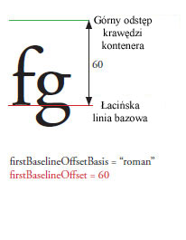

| Pakiet | fl.text |
| Klasa | public class TLFTextField |
| Dziedziczenie | TLFTextField |
| Wersja języka: | ActionScript 3.0 |
| Wersja produktu: | Flash CS5 |
| Wersje środowiska wykonawczego: | Flash Player 10, AIR 1.5 |
Obiekt TLFTextField tworzy się w taki sam sposób, jak pole tekstowe klasy TextField. Następnie można skorzystać z właściwości textFlow w celu przypisania zaawansowanych opcji formatowania udostępnianych przez klasy TLF. Na przykład:
import fl.text.TLFTextField; import flashx.textLayout.formats.TextLayoutFormat; import flashx.textLayout.elements.TextFlow; var myTLFTextField:TLFTextField = new TLFTextField(); addChild(myTLFTextField); myTLFTextField.x = 10; myTLFTextField.y = 10; myTLFTextField.width = 200 myTLFTextField.height = 100; myTLFTextField.text = "This is my text"; var myFormat:TextLayoutFormat = new TextLayoutFormat(); myFormat.textIndent = 8; myFormat.color = 0x336633; myFormat.fontFamily = "Arial, Helvetica, _sans"; myFormat.fontSize = 24; var myTextFlow:TextFlow = myTLFTextField.textFlow; myTextFlow.hostFormat = myFormat; myTextFlow.flowComposer.updateAllControllers();
Powiązane elementy interfejsu API
 Ukryj dziedziczone właściwości publiczne
Ukryj dziedziczone właściwości publiczne Pokaż dziedziczone właściwości publiczne
Pokaż dziedziczone właściwości publiczne| Właściwość | Zdefiniowane przez | ||
|---|---|---|---|
 | accessibilityImplementation : AccessibilityImplementation
Bieżąca implementacja dostępności (AccessibilityImplementation) dla tego wystąpienia klasy InteractiveObject. | InteractiveObject | |
| accessibilityProperties : AccessibilityProperties
Bieżące opcje dostępności tego obiektu wyświetlanego. | DisplayObject | |
| alpha : Number
Wartość przezroczystości alfa określonego obiektu. | DisplayObject | |
| alwaysShowSelection : Boolean
Jeśli ma wartość true, a pole tekstowe nie jest aktywne, program Flash Player wyróżnia zaznaczenie w polu tekstowym kolorem jasnoniebieskim. | TLFTextField | ||
| antiAliasType : String
Typ wygładzania w tym polu tekstowym. | TLFTextField | ||
| autoSize : String
Steruje automatycznym wymiarowaniem oraz wyrównywaniem pola tekstowego. | TLFTextField | ||
| background : Boolean
Określa, czy pole tekstowe ma wypełnione tło. | TLFTextField | ||
| backgroundAlpha : Number
Określa wartość alfa tła pola tekstowego. | TLFTextField | ||
| backgroundColor : uint
Określa kolor tła pola tekstowego. | TLFTextField | ||
| blendMode : String
Wartość z klasy BlendMode określająca, jakiego trybu mieszania należy użyć. | DisplayObject | |
| blendShader : Shader [tylko do zapisu]
Ustawia moduł cieniujący, który jest używany do mieszania pierwszego planu oraz tła. | DisplayObject | |
| blockProgression : Object
Określa pionowy lub poziomy przyrost położenia przy rozmieszczaniu wierszy. | TLFTextField | ||
| border : Boolean
Określa, czy pole tekstowe ma obramowanie. | TLFTextField | ||
| borderAlpha : Number
Określa wartość alfa obramowania. | TLFTextField | ||
| borderColor : uint
Określa kolor obramowania pola tekstowego. | TLFTextField | ||
| borderWidth : Number
Określa szerokość obramowania. | TLFTextField | ||
| bottomScrollV : int [tylko do odczytu]
Liczba całkowita oznaczająca indeks ostatniego (na samym dole) z wierszy widocznych w polu tekstowym, liczona od 1. | TLFTextField | ||
| buttonMode : Boolean
Określa tryb przycisku tej ikonki. | Sprite | |
| cacheAsBitmap : Boolean
Jeśli ustawiono wartość true, środowisko wykonawcze Flash buforuje wewnętrzną reprezentację bitmapy obiektu wyświetlanego. | DisplayObject | |
| cacheAsBitmapMatrix : Matrix
W przypadku wartości innej niż null ten obiekt Matrix definiuje sposób renderowania obiektu wyświetlanego, gdy cacheAsBitmap jest ustawione na true. | DisplayObject | |
| caretIndex : int [tylko do odczytu]
Indeks położenia punktu wstawiania (karetki). | TLFTextField | ||
| columnCount : Object
Liczba kolumn tekstu (jeśli kaskadowo zostanie przekazana wartość undefined, przyjmowana jest wartość domyślna). | TLFTextField | ||
| columnGap : Object
Określa odstęp między kolumnami w pikselach (jeśli przekazana kaskadowo wartość jest równa undefined, przyjmowana jest wartość domyślna). | TLFTextField | ||
| columnWidth : Object
Szerokość kolumny w pikselach (jeśli przekazana kaskadowo wartość jest równa undefined, przyjmowana jest wartość domyślna). | TLFTextField | ||
| condenseWhite : Boolean
Wartość typu Boolean, która określa czy z pola tekstowego HTML lub znacznika TLF mają być usuwane nadmiarowe białe znaki (np. spacje i znaki podziału). | TLFTextField | ||
| constructor : Object
Odwołanie do obiektu klasy lub funkcji konstruktora, dotyczące danej instancji obiektu. | Object | |
| contextMenu : NativeMenu
Określa menu kontekstowe tego obiektu. | InteractiveObject | |
| defaultTextFormat : flash.text:TextFormat
Określa format wstawianego tekstu, na przykład tekstu wprowadzanego przez użytkownika lub wstawianego za pomocą metody replaceSelectedText(). | TLFTextField | ||
| direction : String
Określa domyślny dwukierunkowy poziom osadzenia tekstu w bloku tekstu. | TLFTextField | ||
| displayAsPassword : Boolean
Wskazuje, czy pole tekstowe jest polem hasła. | TLFTextField | ||
| doubleClickEnabled : Boolean
Określa, czy ten obiekt reaguje na zdarzenia doubleClick (dwukrotne kliknięcia). | InteractiveObject | |
| dropTarget : DisplayObject [tylko do odczytu]
Określa obiekt ekranowy, nad którym jest przeciągana ikonka, lub na który upuszczono ikonkę. | Sprite | |
| embedFonts : Boolean
Określa, czy mają być stosowane osadzone kontury czcionek. | TLFTextField | ||
| filters : Array
Indeksowana tablica zawierająca wszystkie filtry aktualnie skojarzone z obiektem wyświetlanym. | DisplayObject | |
| firstBaselineOffset : Object
Określa położenie linii bazowej dla pierwszego wiersza w kontenerze. | TLFTextField | ||
| focusRect : Object
Określa, czy z tym obiektem skojarzono ramkę aktywności. | InteractiveObject | |
| graphics : Graphics [tylko do odczytu]
Określa obiekt Graphics skojarzony z ikonką, której mogą dotyczyć polecenia rysowania kształtów wektorowych. | Sprite | |
| gridFitType : String
Typ dopasowywania do siatki w tym polu tekstowym. | TLFTextField | ||
| height : Number
Wysokość obiektu ekranowego w pikselach. | DisplayObject | |
| hitArea : Sprite
Określa ikonkę, która ma pełnić funkcję obszaru naciskania innej ikonki. | Sprite | |
| htmlText : String
Zawiera reprezentację zawartości pola tekstowego w formacie HTML. | TLFTextField | ||
| length : int [tylko do odczytu]
Liczba znaków w polu tekstowym. | TLFTextField | ||
| loaderInfo : LoaderInfo [tylko do odczytu]
Zwraca obiekt LoaderInfo zawierający informacje o ładowaniu pliku, do którego należy ten obiekt wyświetlany. | DisplayObject | |
| mask : DisplayObject
Wywoływany obiekt wyświetlany jest maskowany przez określony obiekt maski. | DisplayObject | |
| maxChars : int
Maksymalna liczba znaków, które użytkownik może wprowadzić w polu tekstowym. | TLFTextField | ||
| maxScrollH : int [tylko do odczytu]
Maksymalna wartość scrollH. | TLFTextField | ||
| maxScrollV : int [tylko do odczytu]
Maksymalny zakres scrollV | TLFTextField | ||
| metaData : Object
Pobiera obiekt metadanych wystąpienia klasy DisplayObject, jeśli metadane są przechowywane razem z tym wystąpieniem klasy DisplayObject w pliku SWF, korzystając ze znacznika PlaceObject4. | DisplayObject | |
| mouseChildren : Boolean
Określa, czy elementy potomne obiektu obsługują mysz lub inne urządzenie wejściowe użytkownika. | DisplayObjectContainer | |
| mouseEnabled : Boolean
Określa, czy ten obiekt odbiera komunikaty z myszy lub innego urządzenia wejściowego użytkownika. | InteractiveObject | |
| mouseWheelEnabled : Boolean
Wartość typu Boolean określająca, czy program Flash Player powinien automatycznie przewijać wielowierszowe pole tekstowe, gdy użytkownik kliknie na nie i poruszy pokrętłem myszy. | TLFTextField | ||
| mouseX : Number [tylko do odczytu]
Określa współrzędną x myszy lub urządzenia wejściowego użytkownika w pikselach. | DisplayObject | |
| mouseY : Number [tylko do odczytu]
Określa współrzędną y myszy lub urządzenia wejściowego użytkownika w pikselach. | DisplayObject | |
| multiline : Boolean
Określa, czy pole tekstowe jest polem wielowierszowym. | TLFTextField | ||
| name : String
Nazwa instancji obiektu DisplayObject. | DisplayObject | |
| needsSoftKeyboard : Boolean
Określa, czy klawiatura wirtualna (klawiatura programowa wyświetlana na ekranie) powinna być wyświetlana, gdy to wystąpienie klasy InteractiveObject staje się aktywne. | InteractiveObject | |
| numChildren : int [tylko do odczytu]
Zwraca liczbę elementów potomnych tego obiektu. | DisplayObjectContainer | |
| numLines : int [tylko do odczytu]
Określa liczbę wierszy w wielowierszowym polu tekstowym. | TLFTextField | ||
| opaqueBackground : Object
Określa, czy przy konkretnym kolorze tła obiekt wyświetlany jest nieprzejrzysty. | DisplayObject | |
| paddingBottom : Object
Dolne zwężenie w pikselach (jeśli przekazana kaskadowo wartość jest równa undefined, przyjmowana jest wartość domyślna). | TLFTextField | ||
| paddingLeft : Object
Lewe zwężenie w pikselach (jeśli przekazana kaskadowo wartość jest równa undefined, przyjmowana jest wartość domyślna). | TLFTextField | ||
| paddingRight : Object
Prawe zwężenie w pikselach (jeśli przekazana kaskadowo wartość jest równa undefined, przyjmowana jest wartość domyślna). | TLFTextField | ||
| paddingTop : Object
Górne zwężenie w pikselach (jeśli przekazana kaskadowo wartość jest równa undefined, przyjmowana jest wartość domyślna). | TLFTextField | ||
| parent : DisplayObjectContainer [tylko do odczytu]
Odnosi się do obiektu DisplayObjectContainer, który zawiera obiekt wyświetlany. | DisplayObject | |
| pixelMaxScrollV : int [tylko do odczytu]
Maksymalna wartość właściwości pixelScrollV. | TLFTextField | ||
| pixelScrollV : int
Pionowe położenie tekstu w polu tekstowym podawane w pikselach (w odróżnieniu od właściwości scrollV, która jest oparta na wierszach). | TLFTextField | ||
| restrict : String
Oznacza zestaw znaków, które użytkownik może wprowadzać w polu tekstowym. | TLFTextField | ||
| root : DisplayObject [tylko do odczytu]
Dla obiektu wyświetlanego w załadowanym pliku SWF główną właściwość stanowi obiekt wyświetlany na samym szczycie na liście wyświetlania w postaci struktury drzewa, którą reprezentuje plik SWF. | DisplayObject | |
| rotation : Number
Określa wielkość obrotu instancji obiektu DisplayObject (w kątach). | DisplayObject | |
| rotationX : Number
Wskazuje kąt obrotu (w stopniach) instancji DisplayObject wokół osi x — od pozycji początkowej względem nadrzędnego kontenera 3D. | DisplayObject | |
| rotationY : Number
Wskazuje kąt obrotu (w stopniach) instancji DisplayObject wokół osi y — od pozycji początkowej względem nadrzędnego kontenera 3D. | DisplayObject | |
| rotationZ : Number
Wskazuje kąt obrotu (w stopniach) instancji DisplayObject wokół osi z — od pozycji początkowej względem nadrzędnego kontenera 3D. | DisplayObject | |
| scale9Grid : Rectangle
Aktualnie stosowana siatka skalowania. | DisplayObject | |
| scaleX : Number
Wskazuje skalę poziomą (procent) obiektu względem punktu odniesienia. | DisplayObject | |
| scaleY : Number
Wskazuje skalę pionową (procent) obiektu względem punktu odniesienia. | DisplayObject | |
| scaleZ : Number
Wskazuje skalę głębokości (procent) obiektu względem punktu odniesienia. | DisplayObject | |
| scrollH : int
Bieżące położenie podczas przewijania poziomego. | TLFTextField | ||
| scrollRect : Rectangle
Granice obszaru przewijania obiektu wyświetlanego. | DisplayObject | |
| scrollV : int
Pionowe położenie tekstu w polu tekstowym. | TLFTextField | ||
| selectable : Boolean
Wartość typu Boolean wskazująca, czy dane pole tekstowe można zaznaczać. | TLFTextField | ||
| selectionBeginIndex : int [tylko do odczytu]
Indeks pierwszego znaku w bieżącym zaznaczeniu, liczony od 0. | TLFTextField | ||
| selectionEndIndex : int [tylko do odczytu]
Indeks ostatniego znaku w bieżącym zaznaczeniu, liczony od 0. | TLFTextField | ||
| sharpness : Number
Właściwość ostrości nie ma zastosowania do pól tekstowych TLF. | TLFTextField | ||
| softKeyboard : String
Steruje wyglądem klawiatury programowej. | InteractiveObject | |
| softKeyboardInputAreaOfInterest : Rectangle
Definiuje obszar, który powinien pozostać na ekranie po wyświetleniu klawiatury programowej (niedostępna w systemie iOS). | InteractiveObject | |
| soundTransform : flash.media:SoundTransform
Kontroluje dźwięki skojarzone z tą ikonką. | Sprite | |
| stage : Stage [tylko do odczytu]
Stół montażowy obiektu wyświetlanego. | DisplayObject | |
| styleSheet : StyleSheet
Arkusze stylów dla obiektów TLF TextField. | TLFTextField | ||
| tabChildren : Boolean
Określa, czy elementy potomne tego obiektu mają reagować na klawisz Tab. | DisplayObjectContainer | |
| tabEnabled : Boolean
Określa, czy do tego obiektu można przejść za pomocą klawisza Tab. | InteractiveObject | |
| tabIndex : int
Określa kolejność uaktywniania obiektów (z pliku SWF) za pomocą klawisza Tab. | InteractiveObject | |
| text : String
Ciąg znaków odpowiadający bieżącemu tekstowi w polu tekstowym. | TLFTextField | ||
| textColor : uint
Kolor tekstu w polu tekstowym (w formacie szesnastkowym). | TLFTextField | ||
| textFlow : flashx.textLayout.elements:TextFlow
Ta właściwość umożliwia przypisanie formatowania z klas TLF zawartych w pakietach flashx do instancji klasy TLFTextField. | TLFTextField | ||
| textHeight : Number [tylko do odczytu]
Wysokość tekstu w pikselach. | TLFTextField | ||
| textSnapshot : flash.text:TextSnapshot [tylko do odczytu]
Zwraca obiekt TextSnapshot dla tego wystąpienia klasy DisplayObjectContainer. | DisplayObjectContainer | |
| textWidth : Number [tylko do odczytu]
Szerokość tekstu w pikselach. | TLFTextField | ||
| thickness : Number
Właściwość grubości nie ma zastosowania do pól tekstowych TLF. | TLFTextField | ||
| tlfMarkup : String
Ustawia lub pobiera znaczniki TLF tekstu w polu tekstowym TLF. | TLFTextField | ||
| transform : flash.geom:Transform
Obiekt z właściwościami dotyczącymi matrycy obiektu wyświetlanego, transformacji kolorów oraz granic pikseli. | DisplayObject | |
| type : String
Typ pola tekstowego. | TLFTextField | ||
| useHandCursor : Boolean
Wartość typu Boolean wskazuje, czy wskaźnik dłoni pojawia się w momencie, gdy wskaźnik jest przesuwany nad ikonką, której właściwość buttonMode jest ustawiona na wartość true. | Sprite | |
| useRichTextClipboard : Boolean
Określa, czy tekst będzie kopiowany do schowka razem z formatowaniem. | TLFTextField | ||
| verticalAlign : String
Wyrównanie pionowe lub justowanie (jeśli wartość przekazana kaskadowo jest równa undefined, przyjmowana jest wartość domyślna). | TLFTextField | ||
| visible : Boolean
Decyduje, czy obiekt wyświetlany jest widoczny, czy nie. | DisplayObject | |
| width : Number
Szerokość obiektu ekranowego w pikselach. | DisplayObject | |
| wordWrap : Boolean
Wartość typu Boolean wskazująca, że tekst w polu tekstowym może być zawijany. | TLFTextField | ||
| x : Number
Oznacza współrzędną x instancji obiektu DisplayObject w lokalnym układzie współrzędnych nadrzędnego obiektu DisplayObjectContainer. | DisplayObject | |
| y : Number
Oznacza współrzędną y instancji obiektu DisplayObject w lokalnym układzie współrzędnych nadrzędnego obiektu DisplayObjectContainer. | DisplayObject | |
| z : Number
Wskazuje współrzędną wzdłuż osi Z instancji DisplayObject względem nadrzędnego kontenera 3D. | DisplayObject | |
| Metoda | Zdefiniowane przez | ||
|---|---|---|---|
Konstruktor obiektów TLFTextField. | TLFTextField | ||
|
Dodaje potomne wystąpienie klasy DisplayObject do tego wystąpienia klasy DisplayObjectContainer. | DisplayObjectContainer | |
|
Dodaje potomne wystąpienie klasy DisplayObject do tego wystąpienia klasy DisplayObjectContainer. | DisplayObjectContainer | |
| addEventListener(type:String, listener:Function, useCapture:Boolean = false, priority:int = 0, useWeakReference:Boolean = false):void
Rejestruje obiekt detektora zdarzeń w obiekcie EventDispatcher, dzięki czemu detektor będzie otrzymywał powiadomienia o zdarzeniu. | EventDispatcher | |
Dołącza ciąg wskazany w parametrze newText na końcu tekstu w polu tekstowym. | TLFTextField | ||
|
Wskazuje, czy ograniczenia ze względów bezpieczeństwa będą powodowały pomijanie obiektów wyświetlanych na liście uzyskanej poprzez wywołanie metody DisplayObjectContainer.getObjectsUnderPoint() z określonym punktem. | DisplayObjectContainer | |
|
Decyduje o tym, czy określony obiekt ekranowy jest potomkiem instancji obiektu DisplayObjectContainer, czy też sam jest taką instancją. | DisplayObjectContainer | |
|
Wywołuje zdarzenie, tj. kieruje je do przepływu zdarzeń. | EventDispatcher | |
|
Zwraca prostokąt definiujący obszar obiektu wyświetlanego (w układzie współrzędnych obiektu targetCoordinateSpace). | DisplayObject | |
Zwraca prostokąt będący obwiednią znaku. | TLFTextField | ||
Zwraca indeks znaku (liczony od 0) w punkcie określonym za pomocą parametrów x i y. | TLFTextField | ||
|
Zwraca instancję podrzędnego obiektu wyświetlanego o podanym indeksie. | DisplayObjectContainer | |
|
Zwraca instancję podrzędnego obiektu wyświetlanego o podanej nazwie. | DisplayObjectContainer | |
|
Zwraca indeks podrzędnej instancji DisplayObject. | DisplayObjectContainer | |
Po otrzymaniu indeksu znaku zwraca indeks pierwszego znaku w tym samym akapicie. | TLFTextField | ||
Zwraca odwołanie do obiektu DisplayObject o podanym identyfikatorze. Operacja dotyczy obrazu lub pliku SWF, które dodano do sformatowanego pola tekstowego HTML za pomóc znacznika <img>. | TLFTextField | ||
Zwraca indeks (liczony od 0) wiersza określonego za pomocą parametrów x i y. | TLFTextField | ||
Zwraca liczony od 0 indeks wiersza zawierającego znak określony przez parametr charIndex. | TLFTextField | ||
Zwraca liczbę znaków w określonym wierszu tekstowym. | TLFTextField | ||
Zwraca informacje o wymiarach danego wiersza tekstu. | TLFTextField | ||
Zwraca indeks pierwszego znaku w wierszu określonego przez parametr lineIndex. | TLFTextField | ||
Zwraca wiersz tekstowy określony przez parametr lineIndex. | TLFTextField | ||
|
Zwraca tablicę obiektów, które leżą poniżej określonego punktu i są obiektami podrzędnymi tej instancji obiektu DisplayObjectContainer. | DisplayObjectContainer | |
Po podaniu indeksu znaku zwraca wartość długości akapitu zawierający dany znak. | TLFTextField | ||
|
Zwraca prostokąt definiujący granice obiektu wyświetlanego w układzie współrzędnych określonych przez parametr targetCoordinateSpace (z wyłączeniem konturów kształtów). | DisplayObject | |
Zwraca obiekt TextFormat, który zawiera informacje o formatowaniu dla zakresu tekstu określonego przez parametry beginIndex i endIndex. | TLFTextField | ||
|
Konwertuje obiekt punktowy ze współrzędnych obiektu Stage (globalne) do współrzędnych obiektu wyświetlanego (lokalne). | DisplayObject | |
|
Konwertuje punkt dwuwymiarowy ze współrzędnych stołu wymiarowego (globalnych) na współrzędne trójwymiarowego obiektu wyświetlanego (lokalne). | DisplayObject | |
|
Sprawdza, czy obiekt EventDispatcher zawiera jakiekolwiek detektory zarejestrowane dla konkretnego typu zdarzeń. | EventDispatcher | |
|
Wskazuje, czy dla obiektu zdefiniowano określoną właściwość. | Object | |
|
Wyznacza prostokąt ograniczający obiekt wyświetlany w celu sprawdzenia, czy zachodzi on lub przecina się z prostokątem ograniczającym obiektu wyświetlanego obj. | DisplayObject | |
|
Analizuje obiekt wyświetlany w celu ustalenia czy nakłada się on lub przecina punkt określony przez parametry x i y. | DisplayObject | |
Zwraca wartość true, jeśli dostępna osadzona czcionka z określonymi parametrami fontName i fontStyle, gdzie Font.fontType ma wartość flash.text.FontType.EMBEDDED_CFF. | TLFTextField | ||
|
Wskazuje, czy instancja klasy Object należy do łańcucha prototypów obiektu określonego jako parametr. | Object | |
|
Konwertuje punkt trójwymiarowy trójwymiarowego obiektu wyświetlanego (lokalnego) na punkt dwuwymiarowy we współrzędnych stołu montażowego (globalnych). | DisplayObject | |
|
Konwertuje obiekt punktowy ze współrzędnych obiektu wyświetlanego (lokalne) do współrzędnych obiektu Stage (globalne). | DisplayObject | |
|
Wskazuje, czy określona właściwość istnieje i jest przeliczalna. | Object | |
|
Usuwa określoną instancję obiektu podrzędnego DisplayObject z listy obiektów podrzędnych instancji DisplayObjectContainer. | DisplayObjectContainer | |
|
Usuwa obiekt potomny DisplayObject o podanym indeksie z listy elementów potomnych obiektu DisplayObjectContainer. | DisplayObjectContainer | |
|
Powoduje usunięcie wszystkich wystąpień potomnych klasy DisplayObject z listy obiektów potomnych wystąpień klasy DisplayObjectContainer. | DisplayObjectContainer | |
|
Usuwa detektor z obiektu EventDispatcher. | EventDispatcher | |
Zastępuje bieżące zaznaczenie zawartością określoną przez parametr wartości. | TLFTextField | ||
Zastępuje zakres znaków określony przez parametry beginIndex i endIndex zawartością parametru newText. | TLFTextField | ||
|
Powoduje uniesienie klawiatury wirtualnej. | InteractiveObject | |
|
Zmienia położenie istniejącego elementu potomnego w kontenerze obiektów ekranowych. | DisplayObjectContainer | |
|
Ustawia dostępność właściwości dynamicznej używanej w pętlach. | Object | |
Zaznacza tekst określony wartościami indeksu pierwszego i ostatniego znaku, podanymi w parametrach beginIndex oraz endIndex. | TLFTextField | ||
Stosuje formatowanie tekstowe określone przez parametr formatowania do danego tekstu w polu tekstowym. | TLFTextField | ||
|
Pozwala użytkownikowi przeciągnąć określoną ikonkę. | Sprite | |
|
Umożliwia użytkownikowi przeciąganie określonej ikonki na urządzeniu z ekranem dotykowym. | Sprite | |
|
Rekurencyjnie zatrzymuje wykonywanie osi czasu wszystkich obiektów MovieClip, dla których ten obiekt jest obiektem głównym. | DisplayObjectContainer | |
|
Kończy metodę startDrag(). | Sprite | |
|
Kończy działanie metody startTouchDrag(); używana z urządzeniami wyposażonymi w ekran dotykowy. | Sprite | |
|
Zamienia kolejność dwóch określonych obiektów podrzędnych. | DisplayObjectContainer | |
|
Zamienia miejscami na liście dwa różne obiekty potomne o podanych indeksach. | DisplayObjectContainer | |
|
Zwraca ciąg reprezentujący obiekt — sformatowany zgodnie z konwencjami właściwymi dla ustawień regionalnych. | Object | |
|
Zwraca ciąg reprezentujący określony obiekt. | Object | |
|
Zwraca pierwotną wartość dla określonego obiektu. | Object | |
|
Sprawdza, czy detektor zdarzeń określonego typu jest zarejestrowany w tym obiekcie EventDispatcher lub jego elementach macierzystych. | EventDispatcher | |
| Zdarzenie | Podsumowanie | Zdefiniowane przez | ||
|---|---|---|---|---|
| [zdarzenie broadcast] Wywoływane, gdy program Flash Player lub aplikacja środowiska wykonawczego AIR uzyskuje fokus w systemie operacyjnym i przechodzi w stan aktywny. | EventDispatcher | ||
| Wywoływane, gdy obiekt wyświetlany jest dodawany do listy wyświetlania. | DisplayObject | ||
| Wywoływane, gdy obiekt wyświetlany jest dodawany do listy wyświetlania na scenie — albo bezpośrednio, albo wskutek dodania poddrzewa zawierającego obiekt wyświetlany. | DisplayObject | ||
| Wywoływane po zmodyfikowaniu wartości kontrolnej — inaczej niż zdarzenie textInput, które jest wywoływane przed modyfikacją wartości. | TLFTextField | |||
| Wywoływane, gdy użytkownik wybierz opcje „Wyczyść” (lub „Usuń”) z menu kontekstowego dla tekstu. | InteractiveObject | ||
| Wywoływane w momencie naciśnięcia i zwolnienia głównego przycisku urządzenia wskazującego przez użytkownika na tej samej instancji InteractiveObject. | InteractiveObject | ||
| Wywoływane, gdy w wyniku gestu użytkownika zostanie uaktywnione menu kontekstowe skojarzone z tym obiektem interaktywnym w aplikacji AIR. | InteractiveObject | ||
| Wywoływane, gdy użytkownik uaktywnia specyficzną dla platformy kombinację klawiszy wywołującą operację kopiowania lub wybiera polecenie Kopiuj z menu kontekstowego dla tekstu. | InteractiveObject | ||
| Wywoływane, gdy użytkownik uaktywnia specyficzną dla platformy kombinację klawiszy wywołującą operację wycięcia lub wybiera polecenie Wytnij z menu kontekstowego dla tekstu. | InteractiveObject | ||
| [zdarzenie broadcast] Wywoływane, gdy program Flash Player lub aplikacja AIR traci fokus w systemie operacyjnym i przechodzi w stan nieaktywny. | EventDispatcher | ||
| Wywoływane w momencie, gdy użytkownik naciska i zwalnia główny przycisk urządzenia wskazującego dwukrotnie w krótkim odstępie czasu nad tym samym obiektem InteractiveObject, podczas gdy flaga doubleClickEnabled obiektu jest ustawiona na wartość true. | InteractiveObject | ||
| [zdarzenie broadcast] Wywoływane, gdy głowica odtwarzania przechodzi do nowej klatki. | DisplayObject | ||
| [zdarzenie broadcast] Wywoływane, gdy głowica odtwarzania kończy odtwarzanie bieżącej klatki. | DisplayObject | ||
| Wywoływane po uaktywnieniu obiektu wyświetlanego. | InteractiveObject | ||
| Dysponowana, gdy obiekt ekranowy przestaje być aktywny. | InteractiveObject | ||
| [zdarzenie broadcast] Wywoływane po zadziałaniu konstruktorów obiektów wyświetlanych klatek, ale przed działaniem skryptów klatek. | DisplayObject | ||
| Zostaje rozesłane, gdy użytkownik utworzy punkt styku wzdłuż krawędzi powierzchni dotykowej z instancją obiektu InteractiveObject (np. dotknięcie wzdłuż krawędzi powierzchni dotykowej pilota Siri Remote do telewizora firmy Apple). Niektóre urządzenia mogą również interpretować taki styk, jako kombinację różnych zdarzeń dotykowych. | InteractiveObject | ||
| Wywoływane, gdy użytkownik naciśnie na dwa punkty kontaktu nad tą samą instancją klasy InteractiveObject na urządzeniu dotykowym (np. naciśnie dwoma palcami i zwolni obiekt wyświetlany na ekranie dotykowym telefonu komórkowego lub tabletu). | InteractiveObject | ||
| Wywoływane, gdy użytkownik przesuwa punkt kontaktu nad wystąpieniem klasy InteractiveObject na urządzeniu dotykowym (na przykład przez przesuwanie palców z lewej strony na prawą nad obiektem ekranowym na telefonie komórkowym lub tablecie z ekranem dotykowym). | InteractiveObject | ||
| Wywoływane, gdy użytkownik wykona gest obrotu w punkcie kontaktu z instancją klasy InteractiveObject (np. dotknie obiektu wyświetlanego dwoma palcami i obróci palce na ekranie dotykowym telefonu komórkowego lub tabletu). | InteractiveObject | ||
| Wywoływane, gdy użytkownik wykona gest machnięcia w punkcie kontaktu na instancji obiektu InteractiveObject (np. dotknięcie trzema złączonymi palcami ekranu, a następnie szybkie przesunięcie ich nad obiektem wyświetlanym na ekranie dotykowym telefonu komórkowego lub tabletu). | InteractiveObject | ||
| Wywoływane, gdy użytkownik utworzy punkt kontaktu z instancją obiektu InteractiveObject, a następnie stuknie w urządzenie dotykowe (np. przyłoży kilka palców do obiektu wyświetlanego w celu otwarcia menu, a następnie stuknie jednym palcem, aby wybrać element menu na ekranie dotykowym telefonu komórkowego lub tabletu). | InteractiveObject | ||
| Wywoływane, gdy użytkownik wykona gest powiększenia w punkcie kontaktu na instancji obiektu InteractiveObject (np. dotknięcie dwoma palcami ekranu, a następnie szybkie rozsunięcie palców nad obiektem wyświetlanym na ekranie dotykowym telefonu komórkowego lub tabletu). | InteractiveObject | ||
| To zdarzenie jest wywoływane w każdej aplikacji klienckiej, która obsługuje lokalne wprowadzanie znaków za pomocą edytora IME. | InteractiveObject | ||
| Wywoływane, gdy użytkownik naciśnie klawisz. | InteractiveObject | ||
| Dysponowana, gdy użytkownik próbuje uaktywnić inny element za pomocą klawiatury. | InteractiveObject | ||
| Wywoływane, gdy użytkownik zwolni klawisz. | InteractiveObject | ||
| Wywoływane, gdy użytkownik klika hiperłącze w polu tekstowym HTML, którego adres URL zaczyna się od ciągu „event:”. | TLFTextField | |||
| Wywoływane, gdy użytkownik naciśnie i zwolni środkowy przycisk urządzenia wskazującego nad tą samą instancją klasy InteractiveObject. | InteractiveObject | ||
| Wywoływane, gdy użytkownik naciśnie środkowy przycisk urządzenia wskazującego nad wystąpieniem klasy InteractiveObject. | InteractiveObject | ||
| Wywoływane, gdy użytkownik zwolni przycisk urządzenia wskazującego nad wystąpieniem klasy InteractiveObject. | InteractiveObject | ||
| Wywoływane, gdy użytkownik naciśnie przycisk urządzenia wskazującego nad instancją klasy InteractiveObject. | InteractiveObject | ||
| Wywoływane, gdy użytkownik próbuje uaktywnić inny element za pomocą urządzenia wskazującego. | InteractiveObject | ||
| Dysponowana, gdy użytkownik ustawi kursor nad instancją obiektu InteractiveObject i poruszy urządzenie wskazujące. | InteractiveObject | ||
| Wywoływane, gdy użytkownik przesunie kursor poza instancję obiektu InteractiveObject (za pomocą urządzenia wskazującego). | InteractiveObject | ||
| Dysponowana, gdy użytkownik przesunie kursor nad instancję obiektu InteractiveObject (za pomocą urządzenia wskazującego). | InteractiveObject | ||
| Wywoływane, gdy użytkownik zwolni przycisk urządzenia wskazującego nad wystąpieniem klasy InteractiveObject. | InteractiveObject | ||
| Wywoływane, gdy kółko myszy zostanie obrócone nad instancją klasy InteractiveObject. | InteractiveObject | ||
| Wywoływane przez obiekt InteractiveObject inicjujący przeciąganie, gdy użytkownik zwolni przycisk podczas przeciągania. | InteractiveObject | ||
| Wywoływane przez docelowy obiekt InteractiveObject, gdy przeciągany obiekt zostanie na niego upuszczony i upuszczenie zostanie zaakceptowane wywołaniem DragManager.acceptDragDrop(). | InteractiveObject | ||
| Wywoływane przez obiekt InteractiveObject, gdy podczas gestu przeciągania wskaźnik wchodzi w granice tego obiektu. | InteractiveObject | ||
| Wywoływane przez obiekt InteractiveObject, gdy podczas gestu przeciągania wskaźnik opuści granice tego obiektu. | InteractiveObject | ||
| Regularnie wywoływane przez obiekt InteractiveObject, gdy wskaźnik podczas przeciągania pozostaje w granicach tego obiektu. | InteractiveObject | ||
| Wywoływane na początku operacji przeciągania przez obiekt InteractiveObject określony jako inicjator przeciągania w wywołaniu DragManager.doDrag(). | InteractiveObject | ||
| Wywoływane podczas operacji przeciągania przez obiekt InteractiveObject określony jako inicjator przeciągania w wywołaniu DragManager.doDrag(). | InteractiveObject | ||
| Wywoływane, gdy użytkownik uaktywnia specyficzną dla platformy kombinację klawiszy wywołującą operację wklejenia lub wybiera polecenie Wklej z menu kontekstowego dla tekstu. | InteractiveObject | ||
| Wywoływane, gdy użytkownik opuści aktywny pisak na odległość mniejszą niż graniczna odległość wykrywania dla ekranu. | InteractiveObject | ||
| Wywoływane, gdy użytkownik uniesie aktywny pisak na odległość większą niż graniczna odległość wykrywania dla ekranu. | InteractiveObject | ||
| Wywoływane, gdy użytkownik przesuwa aktywny pisak nad ekranem, przy czym pisak nie zostaje uniesiony na odległość większą niż graniczna odległość wykrywania dla ekranu. | InteractiveObject | ||
| Wywoływane, gdy użytkownik przesuwa aktywny pisak poza dany obiekt InteractiveObject, przy czym pisak nie zostaje uniesiony na odległość większą niż graniczna odległość wykrywania dla ekranu. | InteractiveObject | ||
| Wywoływane, gdy użytkownik przesuwa aktywny pisak bezpośrednio nad danym obiektem InteractiveObject, przy czym pisak nie zostaje uniesiony na odległość większą niż graniczna odległość wykrywania dla ekranu. | InteractiveObject | ||
| Wywoływane, gdy użytkownik przesuwa aktywny pisak poza obiekt InteractiveObject i jego obiekty potomne, przy czym pisak nie zostaje uniesiony na odległość większą niż graniczna odległość wykrywania dla ekranu. | InteractiveObject | ||
| Wywoływane, gdy użytkownik przesuwa aktywny pisak z obszaru poza drzewem obiektów potomnych danego obiektu InteractiveObject na liście wyświetlania nad ten obiekt (przy czym pisak nie zostaje uniesiony na odległość większą niż graniczna wartość wykrywania dla ekranu). | InteractiveObject | ||
| Wywoływane, gdy użytkownik zwalnia przycisk urządzenia wskazującego, jeśli wcześniej nacisnął ten przycisk na wystąpieniu klasy InteractiveObject i przesunął wskaźnik urządzenia poza to wystąpienie klasy InteractiveObject. | InteractiveObject | ||
| Dysponowana, gdy obiekt ekranowy ma być usunięty z listy wyświetlania. | DisplayObject | ||
| Dysponowana, gdy obiekt ekranowy ma być usunięty z listy wyświetlania na scenie — albo bezpośrednio, albo wskutek usunięcia poddrzewa zawierającego obiekt ekranowy. | DisplayObject | ||
| [zdarzenie broadcast] Wywoływane, gdy lista wyświetlania ma być aktualizowana lub renderowana. | DisplayObject | ||
| Wywoływane, gdy użytkownik naciśnie i zwolni prawy przycisk urządzenia wskazującego nad tą samą instancją klasy InteractiveObject. | InteractiveObject | ||
| Wywoływane, gdy użytkownik naciśnie przycisk urządzenia wskazującego nad wystąpieniem klasy InteractiveObject. | InteractiveObject | ||
| Wywoływane, gdy użytkownik zwolni przycisk urządzenia wskazującego nad instancją klasy InteractiveObject. | InteractiveObject | ||
| Wywoływane, gdy użytkownik przesunie kursor poza wystąpienie klasy InteractiveObject (za pomocą urządzenia wskazującego). | InteractiveObject | ||
| Wywoływane, gdy użytkownik przesunie kursor nad wystąpienie klasy InteractiveObject (za pomocą urządzenia wskazującego). | InteractiveObject | ||
| Wywoływane przez obiekt TextField, gdy użytkownik przewinął tekst. | TLFTextField | |||
| Wywoływane, gdy użytkownik uaktywnia specyficzną dla platformy kombinację klawiszy wywołującą operację zaznaczenia wszystkiego lub wybiera polecenie „Zaznacz wszystko” z menu kontekstowego dla tekstu. | InteractiveObject | ||
| Wywoływane bezpośrednio po uniesieniu klawiatury programowej. | InteractiveObject | ||
| Wywoływane bezpośrednio przed uniesieniem klawiatury programowej. | InteractiveObject | ||
| Wywoływane bezpośrednio po opuszczeniu klawiatury programowej. | InteractiveObject | ||
| Wywoływane, gdy zmienia się wartość flagi tabChildren obiektu. | InteractiveObject | ||
| Wywoływane, gdy zmienia się flaga tabEnabled obiektu. | InteractiveObject | ||
| Wywoływane, gdy zmienia się wartość właściwości tabIndex obiektu. | InteractiveObject | ||
| Program Flash Player wywołuje zdarzenie textInput, kiedy użytkownik wprowadzi co najmniej jeden znak. | TLFTextField | |||
| Wywoływane, gdy użytkownik zainicjuje kontakt z urządzeniem dotykowym (np. dotknie palcem ekranu dotykowego telefonu komórkowego lub tabletu). | InteractiveObject | ||
| Wywoływane, gdy użytkownik przerwie kontakt z urządzeniem dotykowym (np. uniesie palec z ekranu dotykowego telefonu komórkowego lub tabletu). | InteractiveObject | ||
| Wywoływane, gdy użytkownik dotyka urządzenia. Wywołanie jest powtarzane w sposób ciągły do momentu usunięcia punktu kontaktu. | InteractiveObject | ||
| Wywoływane, gdy użytkownik przemieści punkt kontaktu od instancji klasy InteractiveObject na urządzeniu dotykowym (np. przeciągnie palcem z jednego obiektu wyświetlanego do punktu na drugim obiekcie wyświetlanym na ekranie dotykowym telefonu komórkowego lub tabletu). | InteractiveObject | ||
| Wywoływane, gdy użytkownik przemieści punkt kontaktu nad instancję klasy InteractiveObject na urządzeniu dotykowym (np. przeciągnie palcem z punktu poza obiektem wyświetlanym do punktu na obiekcie wyświetlanym na ekranie dotykowym telefonu komórkowego lub tabletu). | InteractiveObject | ||
| Wywoływane, gdy użytkownik przesuwa punkt kontaktu poza wystąpienie klasy InteractiveObject na urządzeniu dotykowym (na przykład przez przeciągnięcie palcem znad obiektu ekranowego do punktu poza obiektem ekranowym na telefonie komórkowym lub tablecie z ekranem dotykowym). | InteractiveObject | ||
| Wywoływane, gdy użytkownik przemieści punkt kontaktu nad instancję klasy InteractiveObject na urządzeniu dotykowym (np. przeciągnie palcem z punktu poza obiektem wyświetlanym do punktu na obiekcie wyświetlanym na ekranie dotykowym telefonu komórkowego lub tabletu). | InteractiveObject | ||
| Wywoływane, gdy użytkownik zwolni nacisk na ekran dotykowy w punkcie kontaktu na tej samej instancji klasy InteractiveObject, na której kontakt został zainicjowany (na przykład naciśnie palcem i zwolni pojedynczy punkt na obiekcie wyświetlanym na ekranie dotykowym telefonu komórkowego lub tabletu). | InteractiveObject | ||
alwaysShowSelection | właściwość |
alwaysShowSelection:Boolean| Wersja języka: | ActionScript 3.0 |
| Wersje środowiska wykonawczego: | Flash Player 10, AIR 1.5 |
Jeśli ma wartość true, a pole tekstowe nie jest aktywne, program Flash Player wyróżnia zaznaczenie w polu tekstowym kolorem jasno-niebieskim. Jeśli ma wartość false, a pole tekstowe jest aktywne, program Flash Player nie wyróżnia zaznaczenia w polu tekstowym.
Przykład:
package
{
import flash.display.Sprite;
import fl.text.TLFTextField;
import flash.text.TextFieldType;
public class TLFTextField_alwaysShowSelection extends Sprite
{
public function TLFTextField_alwaysShowSelection()
{
var label1:TLFTextField = createTLFTextField(0, 20, 200, 20);
label1.text = "This text is selected.";
label1.setSelection(0, 9);
label1.alwaysShowSelection = true;
var label2:TLFTextField = createTLFTextField(0, 50, 200, 20);
label2.text = "Drag to select some of this text.";
}
private function createTLFTextField(x:Number, y:Number, width:Number, height:Number):TLFTextField
{
var result:TLFTextField = new TLFTextField();
result.x = x;
result.y = y;
result.width = width;
result.height = height;
addChild(result);
return result;
}
}
}
Wartością domyślną jest false.
Implementacja
public function get alwaysShowSelection():Boolean public function set alwaysShowSelection(value:Boolean):voidPowiązane elementy interfejsu API
antiAliasType | właściwość |
antiAliasType:String| Wersja języka: | ActionScript 3.0 |
| Wersje środowiska wykonawczego: | Flash Player 10, AIR 1.5 |
Typ wygładzania w tym polu tekstowym. Dal tej właściwości użyj wartości stałych flash.text.AntiAliasType. Tym ustawieniem można sterować tylko w przypadku, gdy czcionka jest osadzona (właściwość embedFonts ustawiona na wartość true).
W celu ustawienia wartości tej właściwości należy użyć następujących wartości ciągu znaków:
| Wartość ciągu znaków | Opis |
|---|---|
flash.text.AntiAliasType.NORMAL | Stosuje zwykłe wygładzanie tekstu. Odpowiada typowi wygładzania dostępnego w programie Flash Player 7 i starszych wersjach. |
flash.text.AntiAliasType.ADVANCED | Stosuje zaawansowane wygładzanie tekstu, dzięki któremu tekst jest bardziej czytelny. (Ta opcja została udostępniona w programie Flash Player 8). Zaawansowane wygładzanie umożliwia renderowanie czcionek wysokiej jakości nawet przy ich niewielkich rozmiarach. Stosowanie tej funkcji jest zalecany w przypadku aplikacji, które zawierają dużo tekstu o małym rozmiarze czcionki. Nie zaleca się stosowania zaawansowanego wygładzania w przypadku czcionek o wielkości większej niż 48 punktów. |
Wartością domyślną jest flash.text.AntiAliasType.NORMAL.
Implementacja
public function get antiAliasType():String public function set antiAliasType(value:String):voidPowiązane elementy interfejsu API
autoSize | właściwość |
autoSize:String| Wersja języka: | ActionScript 3.0 |
| Wersje środowiska wykonawczego: | Flash Player 10, AIR 1.5 |
Steruje automatycznym wymiarowaniem oraz wyrównywaniem (do prawej, lewej) pola tekstowego. Dopuszczalne wartości dla stałych TextFieldAutoSize: TextFieldAutoSize.NONE (domyślna), TextFieldAutoSize.LEFT, TextFieldAutoSize.RIGHT oraz TextFieldAutoSize.CENTER.
Ustawianie właściwości autoSize na wartość TextFieldAutoSize.NONE (domyślna) nie powoduje zmiany rozmiaru.
Ustawienie właściwości autoSize na wartość TextFieldAutoSize.LEFT spowoduje, że tekst zostanie potraktowany jak tekst wyrównany do lewej, co oznacza, że lewy margines tekstu w polu tekstowym pozostaje bez zmiany, a jakakolwiek zmiana rozmiaru pojedynczego wiersza pola tekstowego wpływa na prawy margines. Jeśli tekst zawiera znak podziału (na przykład, "\n" lub "\r"), rozmiar dolnej krawędzi również zostaje zmieniony celem dopasowania do następnego wiersza tekstowego. Ustawienie właściwości wordWrap na wartość true spowoduje, że tylko rozmiar dolnej krawędzi pola tekstowego ulegnie zmianie, a prawa strona pozostanie stała.
Ustawienie właściwości autoSize na wartość TextFieldAutoSize.RIGHT spowoduje, że tekst zostanie potraktowany jako tekst wyrównany do prawej, co oznacza, że prawy margines pola tekstowego pozostaje stały, a jakakolwiek zmiana rozmiaru pojedynczego wiersza tekstowego wpływa na lewy margines. Jeśli tekst zawiera znak podziału (na przykład, "\n" lub "\r"), rozmiar dolnej krawędzi ulegnie zmianie celem dopasowania do następnego wiersza tekstowego. Ustawienie właściwości wordWrap na wartość true spowoduje, że rozmiar tylko dolnej krawędzi pola tekstowego ulegnie zmianie, a lewa jego strona pozostanie bez zmian.
Ustawienie właściwości autoSize na wartość TextFieldAutoSize.CENTER spowoduje, że tekst zostanie potraktowany jak tekst wyrównany do środka, co oznacza, że jakakolwiek zmiana wielkości pojedynczego wiersza w polu tekstowym spowoduje jego równe rozłożenie między prawym i lewym marginesem. Jeśli tekst zawiera znak podziału (na przykład, "\n" lub "\r"), rozmiar dolnej krawędzi również zostaje zmieniony celem dopasowania do następnego wiersza tekstu. Ustawienie właściwości wordWrap również na wartość true spowoduje, że wielkość dolnej krawędzi pola tekstowego ulegnie zmianie, a prawa i lewa strona pozostanie bez zmian.
Implementacja
public function get autoSize():String public function set autoSize(value:String):voidZgłasza
ArgumentError — Określona właściwość autoSize nie należy do obiektu flash.text.TextFieldAutoSize.
|
Powiązane elementy interfejsu API
background | właściwość |
background:Boolean| Wersja języka: | ActionScript 3.0 |
| Wersje środowiska wykonawczego: | Flash Player 10, AIR 1.5 |
Określa, czy pole tekstowe ma wypełnione tło. Wartość true oznacza, że tło pola tekstowego zawiera wypełnienie. Wartość false oznacza, że tło pola tekstowego nie zawiera wypełnienia. Właściwość backgroundColor służy do ustawienia koloru tła pola tekstowego.
Wartością domyślną jest false.
Implementacja
public function get background():Boolean public function set background(value:Boolean):voidPowiązane elementy interfejsu API
backgroundAlpha | właściwość |
backgroundAlpha:Number| Wersja języka: | ActionScript 3.0 |
| Wersje środowiska wykonawczego: | Flash Player 10, AIR 1.5 |
Określa wartość alfa tła pola tekstowego. Wartość alfa tła może należeć do przedziału od 0 (tło niewidoczne) do 1 (tło lite). Tę właściwość można pobrać lub ustawić, nawet w przypadku braku tła w danym momencie. Jednakże efekt alfa będzie widoczny tylko wówczas, gdy właściwość background pola tekstowego będzie ustawiona na wartośćtrue.
Wartością domyślną jest 1.0.
Implementacja
public function get backgroundAlpha():Number public function set backgroundAlpha(value:Number):voidPowiązane elementy interfejsu API
backgroundColor | właściwość |
backgroundColor:uint| Wersja języka: | ActionScript 3.0 |
| Wersje środowiska wykonawczego: | Flash Player 10, AIR 1.5 |
Określa kolor tła pola tekstowego. Tę właściwość można pobrać lub ustawić, nawet w przypadku braku tła w danym momencie. Jednakże kolor będzie widoczny tylko wówczas, gdy właściwość background pola tekstowego zostanie ustawiona na wartośćtrue.
Wartością domyślną jest 0xFFFFFF (white).
Implementacja
public function get backgroundColor():uint public function set backgroundColor(value:uint):voidPowiązane elementy interfejsu API
blockProgression | właściwość |
blockProgression:Object| Wersja języka: | ActionScript 3.0 |
| Wersja produktu: | Flash CS5 |
| Wersje środowiska wykonawczego: | Flash Player 10, AIR 1.5 |
Określa pionowy lub poziomy przyrost położenia przy rozmieszczaniu wierszy. Wiersze są rozmieszczane od góry do dołu (BlockProgression.TB — dla tekstu poziomego) lub od prawej do lewej (BlockProgression.RL — dla tekstu pionowego).
Poprawne wartości to: flashx.textLayout.formats.BlockProgression.RL, flashx.textLayout.formats.BlockProgression.TB, flashx.textLayout.formats.FormatValue.INHERIT.
Jeśli wartość undefined zostanie przekazana kaskadowo, właściwość odziedziczy wartość z obiektu macierzystego. Jeśli w żadnym obiekcie nadrzędnym ta właściwość nie będzie ustawiona, przyjęta zostanie wartość TB.
Wartością domyślną jest undefined (indicates not set).
Implementacja
public function get blockProgression():Object public function set blockProgression(value:Object):voidPowiązane elementy interfejsu API
border | właściwość |
border:Boolean| Wersja języka: | ActionScript 3.0 |
| Wersje środowiska wykonawczego: | Flash Player 10, AIR 1.5 |
Określa, czy pole tekstowe ma obramowanie. Wartość true oznacza, że pole tekstowe ma obramowanie. Wartość false oznacza, że pole tekstowe nie ma obramowania. Właściwość borderColor umożliwia ustawienie koloru obramowania.
Wartością domyślną jest false.
Implementacja
public function get border():Boolean public function set border(value:Boolean):voidPowiązane elementy interfejsu API
borderAlpha | właściwość |
borderAlpha:Number| Wersja języka: | ActionScript 3.0 |
| Wersje środowiska wykonawczego: | Flash Player 10, AIR 1.5 |
Określa wartość alfa obramowania. Wartość alfa obramowania może należeć do przedziału od 0 (obramowanie niewidoczne) do 1 (obramowanie lite). Tę właściwość można pobrać lub ustawić, nawet w przypadku braku obramowania w danym momencie. Jednakże efekt alfa będzie widoczny tylko wówczas, gdy właściwość border pola tekstowego będzie ustawiona na wartośćtrue.
Wartością domyślną jest 1.0.
Implementacja
public function get borderAlpha():Number public function set borderAlpha(value:Number):voidPowiązane elementy interfejsu API
borderColor | właściwość |
borderColor:uint| Wersja języka: | ActionScript 3.0 |
| Wersje środowiska wykonawczego: | Flash Player 10, AIR 1.5 |
Określa kolor obramowania pola tekstowego. Wartość domyślna to 0x000000 (czarny). Tę właściwość można pobrać lub ustawić, nawet w przypadku braku obramowania w danym momencie. Jednakże kolor będzie widoczny tylko wówczas, gdy właściwość border pola tekstowego zostanie ustawiona na wartość true.
Implementacja
public function get borderColor():uint public function set borderColor(value:uint):voidPowiązane elementy interfejsu API
borderWidth | właściwość |
borderWidth:Number| Wersja języka: | ActionScript 3.0 |
| Wersje środowiska wykonawczego: | Flash Player 10, AIR 1.5 |
Określa szerokość obramowania. Szerokość obramowania może należeć do przedziału od 1 do 100. Tę właściwość można pobrać lub ustawić nawet w przypadku braku obramowania w danym momencie. Jednakże szerokość będzie widoczna tylko wówczas, gdy właściwość border pola tekstowego będzie ustawiona na wartość true.
Szerokość obramowania jest uwzględniana przy obliczaniu szerokości i wysokość pola tekstowego. Aby pobrać szerokość lub wysokość kontenera tekstu bez obramowania, należy odjąć dwukrotność właściwości borderWidth od wartości szerokości lub wysokości.
Na przykład: txtHeight = tlf.height - (2 tlf.borderwidth);.
Wartością domyślną jest 1.
Implementacja
public function get borderWidth():Number public function set borderWidth(value:Number):voidPowiązane elementy interfejsu API
bottomScrollV | właściwość |
bottomScrollV:int [tylko do odczytu] | Wersja języka: | ActionScript 3.0 |
| Wersje środowiska wykonawczego: | Flash Player 10, AIR 1.5 |
Liczba całkowita oznaczająca indeks ostatniego (na samym dole) z wierszy widocznych w polu tekstowym, liczona od 1. Pole tekstowe można traktować jak okno na fragment tekstu. Właściwość scrollV to indeks (którego zbiór wartości zaczyna się liczbą 1) pierwszego widocznego wiersza znajdującego się w górnej części okna, a właściwość bottomScroll indeks ostatniego z wierszy widocznych w oknie.
Cały tekst, który znajduje się między wierszami określonymi za pomocą właściwości scrollV i bottomScrollV, jest aktualnie widoczny w polu tekstowym.
Implementacja
public function get bottomScrollV():intPowiązane elementy interfejsu API
caretIndex | właściwość |
caretIndex:int [tylko do odczytu] | Wersja języka: | ActionScript 3.0 |
| Wersje środowiska wykonawczego: | Flash Player 10, AIR 1.5 |
Indeks położenia punktu wstawiania (karetki). Jeśli punkt wstawiania nie jest wyświetlany, wartość określa położenie punktu wstawiania, które zaistniałoby w przypadku przywrócenia polu aktywności (zwykle ostatnie położenie punktu wstawiania lub wartość 0, jeśli pole nie było aktywne).
Wartości dla indeksów zakresu zaznaczenia zaczynają się od wartości 0 (na przykład wartości pierwszej pozycji to 0, drugiej to 1, itd.).
Przykład:
package
{
import flash.display.Sprite;
import flash.events.MouseEvent;
import fl.text.TLFTextField;
import flash.text.TextFieldType;
public class TLFTextField_caretIndex extends Sprite
{
public function TLFTextField_caretIndex()
{
var tlf:TLFTextField = createTLFTextField(10, 10, 100, 100);
tlf.wordWrap = true;
tlf.type = TextFieldType.INPUT;
tlf.text = "Click in this text field. Compare the difference between clicking without selecting versus clicking and selecting text.";
tlf.addEventListener(MouseEvent.CLICK, printCursorPosition);
}
private function printCursorPosition(event:MouseEvent):void
{
var tlf:TLFTextField = TLFTextField(event.currentTarget);
trace("caretIndex:", tlf.caretIndex);
trace("selectionBeginIndex:", tlf.selectionBeginIndex);
trace("selectionEndIndex:", tlf.selectionEndIndex);
}
private function createTLFTextField(x:Number, y:Number, width:Number, height:Number):TLFTextField
{
var result:TLFTextField = new TLFTextField();
result.x = x;
result.y = y;
result.width = width;
result.height = height;
addChild(result);
return result;
}
}
}
Implementacja
public function get caretIndex():intPowiązane elementy interfejsu API
columnCount | właściwość |
columnCount:Object| Wersja języka: | ActionScript 3.0 |
| Wersje środowiska wykonawczego: | Flash Player 10, AIR 1.5 |
Liczba kolumn tekstu (jeśli kaskadowo zostanie przekazana wartość undefined, przyjmowana jest wartość domyślna). Liczba kolumn przesłania inne ustawienia kolumn. Wartość jest liczbą całkowitą; jeśli nie zostanie określona, przyjmowana jest wartość FormatValue.AUTO. Jeśli wartość columnCount nie jest określona, wówczas wartość columnWidth jest wykorzystywana w celu utworzenia tak dużej liczby kolumn, jaka może zmieścić się w kontenerze.
Poprawne wartości wyrażone jako stała to: flashx.textLayout.formats.FormatValue.AUTO, flashx.textLayout.formats.FormatValue.INHERIT, a także liczby int z zakresu od 1 do 50.
Jeśli przekazana kaskadowo właściwość będzie miała wartość undefined, zostanie przyjęta wartość AUTO.
Wartością domyślną jest undefined (indicates not set).
Implementacja
public function get columnCount():Object public function set columnCount(value:Object):voidPowiązane elementy interfejsu API
columnGap | właściwość |
columnGap:Object| Wersja języka: | ActionScript 3.0 |
| Wersje środowiska wykonawczego: | Flash Player 10, AIR 1.5 |
Określa odstęp między kolumnami w pikselach (jeśli przekazana kaskadowo wartość jest równa undefined, przyjmowana jest wartość domyślna).
Wartości dozwolone to liczby z zakresu od 0 do 1000 oraz flashx.textLayout.formats.FormatValue.INHERIT.
Jeśli przekazana kaskadowo właściwość będzie miała wartość undefined, zostanie przyjęta wartość 20.
Wartością domyślną jest undefined (indicates not set).
Implementacja
public function get columnGap():Object public function set columnGap(value:Object):voidPowiązane elementy interfejsu API
columnWidth | właściwość |
columnWidth:Object| Wersja języka: | ActionScript 3.0 |
| Wersja produktu: | Flash CS5 |
| Wersje środowiska wykonawczego: | Flash Player 10, AIR 1.5 |
Szerokość kolumny w pikselach (jeśli przekazana kaskadowo wartość jest równa undefined, przyjmowana jest wartość domyślna). Jeśli zostanie określona szerokość kolumny, ale nie zostanie określona liczba kolumn, TextLayout utworzy maksymalną liczbę kolumn o określonej szerokości, z uwzględnieniem szerokości kontenera i ustawień columnGap. Ewentualne wolne miejsce jest pozostawiane za ostatnią kolumną. Wartość jest liczbą.
Poprawne wartości wyrażone jako stała to: flashx.textLayout.formats.FormatValue.AUTO, flashx.textLayout.formats.FormatValue.INHERIT, a także liczby z zakresu od 0 do 8000.
Jeśli przekazana kaskadowo właściwość będzie miała wartość undefined, zostanie przyjęta wartość AUTO.
Wartością domyślną jest undefined (indicates not set).
Implementacja
public function get columnWidth():Object public function set columnWidth(value:Object):voidPowiązane elementy interfejsu API
condenseWhite | właściwość |
condenseWhite:Boolean| Wersja języka: | ActionScript 3.0 |
| Wersja produktu: | Flash CS5 |
| Wersje środowiska wykonawczego: | Flash Player 10, AIR 1.5 |
Wartość typu Boolean, która określa czy z pola tekstowego HTML lub znacznika TLF mają być usuwane nadmiarowe białe znaki (np. spacje i znaki podziału). Wartością domyślną jest false. Właściwość condenseWhite dotyczy tylko znacznika TLF lub tekstu z ustawieniem właściwości htmlText, a nie właściwości text. Użycie tekstu z właściwością text spowoduje zignorowanie właściwości condenseWhite.
Jeśli dla właściwości condenseWhite ustawiona jest wartość true, w celu umieszczenia znaków podziału w polu tekstowym należy użyć standardowych znaczników HTML, takich jak <br> i <p>.
Właściwość condenseWhite należy ustawić przed ustawieniem właściwości htmlText lub właściwości tlfMarkup.
W poniższym przykładzie przedstawiono sposób użycia właściwości condenseWhite w celu usunięcia odstępu od treści tlfMarkup:
import fl.text.TLFTextField; var my_tlf:TLFTextField = new TLFTextField(); my_tlf.autoSize = 'left'; // This line removes white space from tlfMarkup my_tlf.condenseWhite = true; addChild(my_tlf); var my_markup:String = '<TextFlow xmlns="http://ns.adobe.com/textLayout/2008">' + ' <p>' + ' <span>Here is the first span.</span>' + ' \n' + ' <span>And here is the second span.</span>' + ' </p>' + '</TextFlow>'; my_tlf.tlfMarkup = my_markup;
Wartością domyślną jest false.
Implementacja
public function get condenseWhite():Boolean public function set condenseWhite(value:Boolean):voidPowiązane elementy interfejsu API
defaultTextFormat | właściwość |
defaultTextFormat:flash.text:TextFormat| Wersja języka: | ActionScript 3.0 |
| Wersja produktu: | Flash CS5 |
| Wersje środowiska wykonawczego: | Flash Player 10, AIR 1.5 |
Określa format wstawianego tekstu, np. tekstu wprowadzanego przez użytkownika lub wstawianego za pomocą metody replaceSelectedText().
Implementacja
public function get defaultTextFormat():flash.text:TextFormat public function set defaultTextFormat(value:flash.text:TextFormat):voidPowiązane elementy interfejsu API
direction | właściwość |
direction:String| Wersja języka: | ActionScript 3.0 |
| Wersja produktu: | Flash CS5 |
| Wersje środowiska wykonawczego: | Flash Player 10, AIR 1.5 |
Określa domyślny dwukierunkowy poziom osadzenia tekstu w bloku tekstu. Kolejność odczytu od lewej do prawej, jak w skryptach w stylu łacińskim, lub od prawej do lewej, jak w języku arabskim lub hebrajskim. Ta właściwość wpływa również na kierunek kolumny po zastosowaniu jej na poziomie kontenera. Kolumny mogą być czytane od lewej do prawej lub na odwrót, podobnie jak tekst. Poniżej przedstawiono kilka przykładów:

Poprawne wartości to: flashx.textLayout.formats.Direction.LTR, flashx.textLayout.formats.Direction.RTL, flashx.textLayout.formats.FormatValue.INHERIT.
Jeśli wartość undefined zostanie przekazana kaskadowo, właściwość odziedziczy wartość z obiektu macierzystego. Jeśli w żadnym obiekcie nadrzędnym ta właściwość nie będzie ustawiona, przyjęta zostanie wartość LTR.
Wartością domyślną jest undefined (indicates not set).
Implementacja
public function get direction():String public function set direction(value:String):voidPowiązane elementy interfejsu API
displayAsPassword | właściwość |
displayAsPassword:Boolean| Wersja języka: | ActionScript 3.0 |
| Wersja produktu: | Flash CS5 |
| Wersje środowiska wykonawczego: | Flash Player 10, AIR 1.5 |
Wskazuje, czy pole tekstowe jest polem hasła. Wartość true tej właściwości oznacza, że pole tekstowe jest traktowane jak pole hasła i ukrywa wpisywane znaki, wyświetlając w ich miejscu znaki gwiazdki. Wartość false oznacza, że pole tekstowe nie jest traktowane jak pole hasła. Włączony tryb hasła uniemożliwia korzystanie z poleceń Wytnij i Kopiuj, a odpowiadające im skróty klawiaturowe nie będą aktywne. Ten mechanizm zabezpieczający uniemożliwia nieuprawnionemu użytkownikowi korzystanie ze skrótów w celu odkrycia hasła do komputera pozostawionego bez nadzoru.
Wartością domyślną jest false.
Implementacja
public function get displayAsPassword():Boolean public function set displayAsPassword(value:Boolean):voidembedFonts | właściwość |
embedFonts:Boolean| Wersja języka: | ActionScript 3.0 |
| Wersja produktu: | Flash CS5 |
| Wersje środowiska wykonawczego: | Flash Player 10, AIR 1.5 |
Określa, czy mają być stosowane osadzone kontury czcionek. Jeśli wartością jest false, program Flash Player renderuje pole tekstowe za pomocą czcionek urządzenia.
Ustawienie właściwości embedFonts dla pola tekstowego na wartość true wymaga określenia czcionki dla tego tekstu za pomocą właściwości font obiektu TextFormat, który został zastosowany do pola tekstowego. Jeśli określona czcionka nie jest osadzona w pliku SWF, tekst zostanie wyświetlony za pomocą czcionki rezerwowej.
Wartością domyślną jest false.
Implementacja
public function get embedFonts():Boolean public function set embedFonts(value:Boolean):voidPowiązane elementy interfejsu API
firstBaselineOffset | właściwość |
firstBaselineOffset:Object| Wersja języka: | ActionScript 3.0 |
| Wersja produktu: | Flash CS5 |
| Wersje środowiska wykonawczego: | Flash Player 10, AIR 1.5 |
Określa położenie linii bazowej dla pierwszego wiersza w kontenerze. Ustawienia narodowe na poziomie kontenera określają, do której linii bazowej odwołuje się ta właściwość. W językach japońskim i chińskim przyjmowana jest wartość TextBaseline.IDEOGRAPHIC_BOTTOM; we wszystkich innych językach przyjmowana jest wartość TextBaseline.ROMAN. Przesunięcie od górnego zwężenia (lub prawego zwężenia, jeśli blockProgression ma wartość RL) kontenera do linii bazowej pierwszego wiersza może mieć wartość BaselineOffset.ASCENT, co oznacza równość górnemu wydłużeniu wiersza; BaselineOffset.LINE_HEIGHT, co oznacza równość wysokości pierwszego wiersza, lub dowolną stałą wartość w celu określenia odległości bezwzględnej. BaselineOffset.AUTO zrównuje wydłużenie górne wiersza z górnym zwężeniem kontenera.



Dozwolone wartości to ciągi znaków flashx.textLayout.formats.BaselineOffset.AUTO, flashx.textLayout.formats.BaselineOffset.ASCENT, flashx.textLayout.formats.BaselineOffset.LINE_HEIGHT, flashx.textLayout.formats.FormatValue.INHERIT oraz liczby z zakresu od 0 do 1000.
Jeśli wartość undefined zostanie przekazana kaskadowo, właściwość odziedziczy wartość z obiektu macierzystego. Jeśli w żadnym obiekcie nadrzędnym ta właściwość nie będzie ustawiona, przyjęta zostanie wartość AUTO.
Wartością domyślną jest undefined (indicates not set).
Implementacja
public function get firstBaselineOffset():Object public function set firstBaselineOffset(value:Object):voidPowiązane elementy interfejsu API
gridFitType | właściwość |
gridFitType:String| Wersja języka: | ActionScript 3.0 |
| Wersja produktu: | Flash CS5 |
| Wersje środowiska wykonawczego: | Flash Player 10, AIR 1.5 |
Typ dopasowywania do siatki w tym polu tekstowym. Ta właściwość ma zastosowanie tylko w przypadku, gdy właściwość flash.text.AntiAliasType pola tekstowego jest ustawiona na wartość flash.text.AntiAliasType.ADVANCED.
Zastosowany typ dopasowania siatki określa, czy w programie Flash Player główne pionowe i poziome linie siatki mają zostać dopasowane do siatki subpikseli.
Dla właściwości flash.text.GridFitType dostępne są następujące wartości ciągów znaków:
| Wartość ciągu znaków | Opis |
|---|---|
flash.text.GridFitType.NONE | Określa brak dopasowania siatki. Linie poziome i pionowe w glifach nie są przyciągane do siatki pikselowej. To ustawienie jest zalecane w przypadku animacji lub tekstu o dużym rozmiarze czcionki. |
flash.text.GridFitType.PIXEL | Określa dopasowanie poziomych i pionowych głównych linii siatki do siatki pikseli. To ustawienie sprawdza się tylko dla pól tekstowych o wyrównaniu do lewej. Korzystanie z tej właściwości wymaga ustawienia właściwości flash.dispaly.AntiAliasType pola tekstowego na wartość flash.text.AntiAliasType.ADVANCED. To ustawienie udostępnia najlepszą czytelność dla tekstu wyrównanego do lewej. |
flash.text.GridFitType.SUBPIXEL | Określa dopasowanie poziomych i pionowych głównych linii siatki do siatki subpikseli w monitorach LCD. Korzystanie z tego ustawienia wymaga ustawienia właściwości flash.text.AntiAliasType pola tekstowego na wartość flash.text.AntiAliasType.ADVANCED. Ustawienie flash.text.GridFitType.SUBPIXEL często sprawdza się dla dynamicznego tekstu wyrównanego do prawej lub do środka jak również w przypadku, gdy jakość tekstu jest ważniejsza od jakości animacji. |
Wartością domyślną jest flash.text.GridFitType.PIXEL.
Implementacja
public function get gridFitType():String public function set gridFitType(value:String):voidPowiązane elementy interfejsu API
htmlText | właściwość |
htmlText:String| Wersja języka: | ActionScript 3.0 |
| Wersja produktu: | Flash CS5 |
| Wersje środowiska wykonawczego: | Flash Player 10, AIR 1.5 |
Zawiera reprezentację zawartości pola tekstowego w formacie HTML.
Instancje klasy TLFTextField obsługują następujące znaczniki HTML:
| Znacznik | Opis |
|---|---|
| Znacznik zakotwiczenia |
Znacznik <a> służy do tworzenia łącza hipertekstowego i obsługuje następujące atrybuty:
|
| Znacznik pogrubienia |
Znacznik <b> renderuje tekst jako pogrubiony. Użyta czcionka musi być dostępna w typie pogrubiona.
|
| Znacznik podziału |
Znacznik <br> tworzy podział wiersza w tekście.
|
| Znacznik czcionki |
Znacznik czcionki <font> określa czcionkę lub listę czcionek wyświetlanego tekstu. Znacznik czcionek obsługuje następujące atrybuty:
|
| Znacznik obrazu |
Znacznik <img> umożliwia osadzenie zewnętrznych plików obrazu (JPEG, GIF, PNG), plików SWF oraz klipów filmowych wewnątrz tekstu.
Znacznik
Uwaga: Inaczej niż w klasie TextField, następujące atrybuty nie są obsługiwane: |
| Znacznik kursywy |
Znacznik kursywy <i> wyświetla oznaczony tekst w kursywie. Użyta czcionka musi być dostępna w typie kursywa.
|
| Znacznik elementu listy | Uwaga: inaczej niż w klasie TextField, znacznik elementu listy (LI) nie jest obsługiwany. |
| Znacznik akapitu |
Znacznik paragrafu <p> umożliwia utworzenie nowego akapitu. Znacznik <p> obsługuje następujące atrybuty:
|
| Znacznik zakresu |
Znacznik <span> obsługuje następujące atrybuty:
|
| Znacznik formatu tekstu |
Znacznik formatu tekstu Znacznik
|
| Znacznik podkreślenia |
Znacznik podkreślenia <u> Ustawia podkreślenie dla tekstu oznaczonego tym znacznikiem.
|
Program Flash obsługuje również jawne kody znaków, jak np. & (ampersand w kodzie ASCII) czy € (symbol € w kodzie Unicode).
Implementacja
public function get htmlText():String public function set htmlText(value:String):voidPowiązane elementy interfejsu API
length | właściwość |
maxChars | właściwość |
maxChars:int| Wersja języka: | ActionScript 3.0 |
| Wersja produktu: | Flash CS5 |
| Wersje środowiska wykonawczego: | Flash Player 10, AIR 1.5 |
Maksymalna liczba znaków, które użytkownik może wprowadzić w polu tekstowym. Za pomocą skryptu można wstawić więcej tekstu niż pozwala właściwość maxChars; właściwość maxChars oznacza maksymalną ilości tekstu wpisanego przez użytkownika. Jeśli wartość tej właściwości wynosi 0, użytkownik może wpisać nieograniczoną ilość tekstu.
Wartością domyślną jest 0.
Implementacja
public function get maxChars():int public function set maxChars(value:int):voidmaxScrollH | właściwość |
maxScrollV | właściwość |
mouseWheelEnabled | właściwość |
mouseWheelEnabled:Boolean| Wersja języka: | ActionScript 3.0 |
| Wersja produktu: | Flash CS5 |
| Wersje środowiska wykonawczego: | Flash Player 10, AIR 1.5 |
Wartość typu Boolean określająca, czy program Flash Player powinien automatycznie przewijać wielowierszowe pole tekstowe, gdy użytkownik kliknie na nie i poruszy pokrętłem myszy. Za pomocą tej właściwości można zablokować przewijanie tekstu przy użyciu pokrętła myszy w polu tekstowym lub zaimplementować własny sposób przewijania tekstu w polu tekstowym.
Wartością domyślną jest true.
Implementacja
public function get mouseWheelEnabled():Boolean public function set mouseWheelEnabled(value:Boolean):voidmultiline | właściwość |
multiline:Boolean| Wersja języka: | ActionScript 3.0 |
| Wersja produktu: | Flash CS5 |
| Wersje środowiska wykonawczego: | Flash Player 10, AIR 1.5 |
Określa, czy pole tekstowe jest polem wielowierszowym. Wartość true wskazuje, że pole tekstowe jest polem wielowierszowym; wartość false wskazuje, że pole tekstowe jest polem jednowierszowym. W przypadku pola typu TextFieldType.INPUT wartość multiline określa, czy naciśnięcie klawisza Enter powoduje utworzenie nowego wiersza (false powoduje, że naciśnięcie klawisza Enter jest ignorowane). Jeśli tekst zostanie wklejony do pola TextField z wartością multiline równą false, nowe wiersze znajdują się poza tekstem.
Wartością domyślną jest false.
Implementacja
public function get multiline():Boolean public function set multiline(value:Boolean):voidPowiązane elementy interfejsu API
numLines | właściwość |
numLines:int [tylko do odczytu] | Wersja języka: | ActionScript 3.0 |
| Wersja produktu: | Flash CS5 |
| Wersje środowiska wykonawczego: | Flash Player 10, AIR 1.5 |
Określa liczbę wierszy w wielowierszowym polu tekstowym. Jeśli właściwość wordWrap jest ustawiona na wartość true, podczas zawijania tekstu liczba wierszy zwiększa się.
Implementacja
public function get numLines():intPowiązane elementy interfejsu API
paddingBottom | właściwość |
paddingBottom:Object| Wersja języka: | ActionScript 3.0 |
| Wersja produktu: | Flash CS5 |
| Wersje środowiska wykonawczego: | Flash Player 10, AIR 1.5 |
Dolne zwężenie w pikselach (jeśli przekazana kaskadowo wartość jest równa undefined, przyjmowana jest wartość domyślna). Odstęp między dolną krawędzią kontenera a tekstem. Wartość jest liczbą.
W przypadku tekstu poziomego w kontenerach przewijanych z wieloma kolumnami pierwsza kolumna i kolejne kolumny przedstawiają dopełnienie jako odstęp u dołu kontenera, ale w przypadku ostatniej kolumny (jeśli cały tekst się nie mieści) konieczne może być przewinięcie w celu wyświetlenia dopełnienia.
Wartości dozwolone to liczby z zakresu od 0 do 1000 oraz flashx.textLayout.formats.FormatValue.INHERIT.
Jeśli przekazana kaskadowo właściwość będzie miała wartość undefined, zostanie przyjęta wartość 0.
Wartością domyślną jest undefined (indicates not set).
Implementacja
public function get paddingBottom():Object public function set paddingBottom(value:Object):voidPowiązane elementy interfejsu API
paddingLeft | właściwość |
paddingLeft:Object| Wersja języka: | ActionScript 3.0 |
| Wersja produktu: | Flash CS5 |
| Wersje środowiska wykonawczego: | Flash Player 10, AIR 1.5 |
Lewe zwężenie w pikselach (jeśli przekazana kaskadowo wartość jest równa undefined, przyjmowana jest wartość domyślna). Odstęp między lewą krawędzią kontenera a tekstem. Wartość jest liczbą.
W przypadku tekstu pionowego w kontenerach przewijanych z wieloma kolumnami pierwsze i kolejne kolumny przedstawiają dopełnienie jako pusty odstęp na końcu kontenera, ale w przypadku ostatniej kolumny (jeśli cały tekst się nie mieści) konieczne może być przewinięcie w celu wyświetlenia dopełnienia.
Wartości dozwolone to liczby z zakresu od 0 do 1000 oraz flashx.textLayout.formats.FormatValue.INHERIT.
Jeśli przekazana kaskadowo właściwość będzie miała wartość undefined, zostanie przyjęta wartość 0.
Wartością domyślną jest undefined (indicates not set).
Implementacja
public function get paddingLeft():Object public function set paddingLeft(value:Object):voidPowiązane elementy interfejsu API
paddingRight | właściwość |
paddingRight:Object| Wersja języka: | ActionScript 3.0 |
| Wersja produktu: | Flash CS5 |
| Wersje środowiska wykonawczego: | Flash Player 10, AIR 1.5 |
Prawe zwężenie w pikselach (jeśli przekazana kaskadowo wartość jest równa undefined, przyjmowana jest wartość domyślna). Odstęp między prawą krawędzią kontenera a tekstem. Wartość jest liczbą.
Wartości dozwolone to liczby z zakresu od 0 do 1000 oraz flashx.textLayout.formats.FormatValue.INHERIT.
Jeśli przekazana kaskadowo właściwość będzie miała wartość undefined, zostanie przyjęta wartość 0.
Wartością domyślną jest undefined (indicates not set).
Implementacja
public function get paddingRight():Object public function set paddingRight(value:Object):voidPowiązane elementy interfejsu API
paddingTop | właściwość |
paddingTop:Object| Wersja języka: | ActionScript 3.0 |
| Wersja produktu: | Flash CS5 |
| Wersje środowiska wykonawczego: | Flash Player 10, AIR 1.5 |
Górne zwężenie w pikselach (jeśli przekazana kaskadowo wartość jest równa undefined, przyjmowana jest wartość domyślna). Odstęp między górną krawędzią kontenera a tekstem. Wartość jest liczbą.
Wartości dozwolone to liczby z zakresu od 0 do 1000 oraz flashx.textLayout.formats.FormatValue.INHERIT.
Jeśli przekazana kaskadowo właściwość będzie miała wartość undefined, zostanie przyjęta wartość 0.
Wartością domyślną jest undefined (indicates not set).
Implementacja
public function get paddingTop():Object public function set paddingTop(value:Object):voidPowiązane elementy interfejsu API
passwordCharacter | właściwość |
passwordCharacter:String [tylko do odczytu] Pobiera lub ustawia znak używany do ukrywania znaków w bloku hasła.
Implementacja
tlf_internal function get passwordCharacter():StringpixelMaxScrollV | właściwość |
pixelMaxScrollV:int [tylko do odczytu] | Wersja języka: | ActionScript 3.0 |
| Wersja produktu: | Flash CS5 |
| Wersje środowiska wykonawczego: | Flash Player 10, AIR 1.5 |
Maksymalna wartość właściwości pixelScrollV. Jednostkami właściwości pixelMaxScrollV są piksele (w odróżnieniu od właściwości maxScrollV, która jest oparta na wierszach).
Implementacja
public function get pixelMaxScrollV():intpixelScrollV | właściwość |
pixelScrollV:int| Wersja języka: | ActionScript 3.0 |
| Wersja produktu: | Flash CS5 |
| Wersje środowiska wykonawczego: | Flash Player 10, AIR 1.5 |
Pionowe położenie tekstu w polu tekstowym podawane w pikselach (w odróżnieniu od właściwości scrollV, która jest oparta na wierszach). Właściwość pixelScrollV ułatwia płynne przewijanie obiektu textField do określonego położenia.
Implementacja
public function get pixelScrollV():int public function set pixelScrollV(value:int):voidPowiązane elementy interfejsu API
restrict | właściwość |
restrict:String| Wersja języka: | ActionScript 3.0 |
| Wersja produktu: | Flash CS5 |
| Wersje środowiska wykonawczego: | Flash Player 10, AIR 1.5 |
Oznacza zestaw znaków, które użytkownik może wprowadzać w polu tekstowym. Jeśli wartością właściwości restrict jest wartość null, użytkownik może wprowadzić dowolny znak. Jeśli wartością właściwości restrict jest pusty ciąg znaków, użytkownik nie może wprowadzić żadnego znaku. Jeśli wartością właściwości restrict jest ciąg znaków, użytkownik może wprowadzić do pola tekstowego tylko znaki z tego ciągu. Ciąg znaków jest przeszukiwany od lewej do prawej. Zakres można zdefiniować za pomocą znaku myślnika (-). Ograniczone są tylko interakcje użytkownika; skrypt może umieścić w polu tekstowym dowolny tekst. Tej właściwości nie można zsynchronizować z opcjami osadzania czcionki w inspektorze właściwości.
Jeśli ciąg znaków rozpoczyna się od znaku karetki (^), wszystkie znaki są początkowo akceptowane, a następujące po nich znaki w ciągu są wykluczane ze zbioru znaków akceptowanych. Jeśli ciąg znaków nie rozpoczyna się od znaku karetki (^), żadne znaki nie są początkowo akceptowane, a następujące po nich znaki w ciągu zostają zawarte w zbiorze znaków akceptowanych.
W poniższym przykładzie do pola tekstowego można wprowadzić tylko znaki dużej litery, spacje oraz liczby.
my_txt.restrict = "A-Z 0-9";
Poniższy przykład ilustruje włączenie wszystkich znaków z wyjątkiem tych pisanych małą literą:
my_txt.restrict = "^a-z";
Aby wprowadzić znaczenie znaku karetki (^) lub kreski (-) można użyć ukośnika odwrotnego. Akceptowalne sekwencje zawierające ukośnik odwrotny to: \-, \^ lub \\. Ukośnik odwrotny musi stanowić rzeczywisty znak w ciągu znaków, dlatego w języku ActionScript należy użyć podwójnego znaku ukośnika odwrotnego. Na przykład poniższy kod zawiera tylko znak kreski (-) i karetki z (^):
my_txt.restrict = "\\-\\^";
Znaku ^ można użyć w dowolnym miejscu ciągu znaków — umożliwia włączanie i wykluczanie znaków. Poniższy kod włącza tylko znaki dużych liter, ale wyłącza literę Q:
my_txt.restrict = "A-Z^Q";
Za pomocą sekwencji zmiany znaczenia \u można budować zastrzeżone ciągi znaków. Poniższy kod zawiera tylko znaki ASCII od numeru 32 (spacja) do 126 (tylda).
my_txt.restrict = "\u0020-\u007E";
Wartością domyślną jest null.
Implementacja
public function get restrict():String public function set restrict(value:String):voidscrollH | właściwość |
scrollH:int| Wersja języka: | ActionScript 3.0 |
| Wersja produktu: | Flash CS5 |
| Wersje środowiska wykonawczego: | Flash Player 10, AIR 1.5 |
Bieżące położenie podczas przewijania poziomego. Wartość 0 właściwości scrollH oznacza, że tekst nie może być przewijany w poziomie. Wartość tej właściwości stanowi liczba całkowita, która reprezentuje położenie w poziomie wyrażone w pikselach.
Jednostką dla przewijania w poziomie są piksele, a dla przewijania w pionie — wiersze. Przewijanie w poziomie jest mierzone w pikselach, ponieważ większość zazwyczaj używanych czcionek jest równomiernie rozłożona, co oznacza, że znaki mogą mieć różną szerokość. Przewijanie w pionie w programie Flash Player odbywa się według wierszy, ponieważ użytkownicy zazwyczaj wolą wyświetlić pełny, a nie częściowy wiersz tekstowy. Nawet w przypadku, gdy w wierszu znajdują się różne czcionki, wysokość wiersza jest dostosowywana do największej z nich.
Uwaga: Zbiór liczb dla właściwości scrollH rozpoczyna się od liczby 0, a nie liczby 1, jak dla właściwości przewijania w pionie scrollV.
Implementacja
public function get scrollH():int public function set scrollH(value:int):voidPowiązane elementy interfejsu API
scrollV | właściwość |
scrollV:int| Wersja języka: | ActionScript 3.0 |
| Wersja produktu: | Flash CS5 |
| Wersje środowiska wykonawczego: | Flash Player 10, AIR 1.5 |
Pionowe położenie tekstu w polu tekstowym. Właściwość scrollV pomaga nawigować do konkretnego akapitu w długim ustępie lub tworzyć przewijane pola tekstowe.
Jednostką dla przewijania w pionie są wiersze, a dla przewijania w poziomie — piksele. Jeśli pierwszy wyświetlany wiersz to pierwszy wiersz pola tekstowego, właściwość scrollV przyjmuje wartość 1 (nie 0). Przewijanie w poziomie jest mierzone w pikselach ponieważ większość czcionek jest równomiernie rozłożona, co oznacza, że znaki mogą mieć różną szerokość. Przewijanie w pionie w programie Flash Player odbywa się według wierszy, ponieważ użytkownicy zazwyczaj chcą wyświetlić pełny, a nie częściowy wiersz tekstowy. Nawet w przypadku, gdy w wierszu znajdują się różne czcionki, wysokość wiersza jest dostosowywana do największej z nich.
Implementacja
public function get scrollV():int public function set scrollV(value:int):voidPowiązane elementy interfejsu API
selectable | właściwość |
selectable:Boolean| Wersja języka: | ActionScript 3.0 |
| Wersja produktu: | Flash CS5 |
| Wersje środowiska wykonawczego: | Flash Player 10, AIR 1.5 |
Wartość typu Boolean wskazująca, czy dane pole tekstowe można zaznaczać. Wartość true oznacza, że tekst można zaznaczać. Właściwość selectable steruje możliwością zaznaczania, a nie edycji tekstu w polu tekstowym. W odróżnieniu od klasycznych dynamicznych lub wejściowych pól tekstowych, edytowalne pola tekstowe TLF zawsze umożliwiają zaznaczanie. Jeśli ta właściwość jest ustawiona na false, a wybranym typem wprowadzania jest typ dynamic, użytkownik nie może zaznaczać tekstu.
Jeśli właściwość selectable jest ustawiona na wartość false, tekst w polu tekstowym nie reaguje na polecenia zaznaczenia lub ich skróty klawiszowe i nie można go skopiować za pomocą polecenia Kopiuj. Jeśli właściwość selectable jest ustawiona na wartość true, tekst w polu tekstowym można zaznaczyć za pomocą myszy lub klawiszy klawiatury i skopiować za pomocą polecenia Kopiuj.
Wartością domyślną jest true.
Implementacja
public function get selectable():Boolean public function set selectable(value:Boolean):voidPowiązane elementy interfejsu API
selectionBeginIndex | właściwość |
selectionBeginIndex:int [tylko do odczytu] | Wersja języka: | ActionScript 3.0 |
| Wersja produktu: | Flash CS5 |
| Wersje środowiska wykonawczego: | Flash Player 10, AIR 1.5 |
Indeks pierwszego znaku w bieżącym zaznaczeniu, liczony od 0. Na przykład, liczba dla pierwszego znaku to 0, dla drugiego to 1, itd. W przypadku braku zaznaczenia, ta właściwości przyjmuje wartość właściwości caretIndex.
Implementacja
public function get selectionBeginIndex():intPowiązane elementy interfejsu API
selectionEndIndex | właściwość |
selectionEndIndex:int [tylko do odczytu] | Wersja języka: | ActionScript 3.0 |
| Wersja produktu: | Flash CS5 |
| Wersje środowiska wykonawczego: | Flash Player 10, AIR 1.5 |
Indeks ostatniego znaku w bieżącym zaznaczeniu, liczony od 0. Na przykład, liczba dla pierwszego znaku to 0, dla drugiego to 1, itd. W przypadku braku zaznaczenia, ta właściwości przyjmuje wartość właściwości caretIndex.
Implementacja
public function get selectionEndIndex():intPowiązane elementy interfejsu API
sharpness | właściwość |
sharpness:Number| Wersja języka: | ActionScript 3.0 |
| Wersja produktu: | Flash CS5 |
| Wersje środowiska wykonawczego: | Flash Player 10, AIR 1.5 |
Właściwość ostrości nie ma zastosowania do pól tekstowych TLF. Wszelkie podane wartości będą ignorowane i zawsze zwracana będzie wartość zero.
Implementacja
public function get sharpness():Number public function set sharpness(value:Number):voidstyleSheet | właściwość |
styleSheet:StyleSheet| Wersja języka: | ActionScript 3.0 |
| Wersja produktu: | Flash CS5 |
| Wersje środowiska wykonawczego: | Flash Player 10, AIR 1.5 |
Arkusze stylów dla obiektów TLF TextField.
Implementacja
public function get styleSheet():StyleSheet public function set styleSheet(value:StyleSheet):voidtext | właściwość |
text:String| Wersja języka: | ActionScript 3.0 |
| Wersja produktu: | Flash CS5 |
| Wersje środowiska wykonawczego: | Flash Player 10, AIR 1.5 |
Ciąg znaków odpowiadający bieżącemu tekstowi w polu tekstowym. Wiersze są rozdzielone za pomocą znaku powrotu karetki ('\r', ASCII 13). Ta właściwość określa niesformatowany tekst w polu tekstowym, bez znaczników HTML.
Aby pobrać tekst w formacie HTML, należy użyć właściwości htmlText.
Implementacja
public function get text():String public function set text(value:String):voidPowiązane elementy interfejsu API
textColor | właściwość |
textColor:uint| Wersja języka: | ActionScript 3.0 |
| Wersja produktu: | Flash CS5 |
| Wersje środowiska wykonawczego: | Flash Player 10, AIR 1.5 |
Kolor tekstu w polu tekstowym (w formacie szesnastkowym). W szesnastkowym systemie kolorów wartości kolorów są reprezentowane za pomocą sześciu cyfr. Dla każdej cyfry istnieje szesnaście możliwych wartości lub znaków. Zakres znaków obejmuje cyfry od 0 do 9, a następnie litery od A do F. Na przykład reprezentacja koloru czarnego 0x000000, a białego to 0xFFFFFF.
Wartością domyślną jest 0 (0x000000).
Implementacja
public function get textColor():uint public function set textColor(value:uint):voidtextFlow | właściwość |
textFlow:flashx.textLayout.elements:TextFlow| Wersja języka: | ActionScript 3.0 |
| Wersja produktu: | Flash CS5 |
| Wersje środowiska wykonawczego: | Flash Player 10, AIR 1.5 |
Ta właściwość umożliwia przypisanie formatowania z klas TLF zawartych w pakietach flashx do instancji klasy TLFTextField. Na przykład:
var myFormat:TextLayoutFormat = new TextLayoutFormat(); myFormat.textIndent = 8; myFormat.color = 0x336633; myFormat.fontFamily = "Arial, Helvetica, _sans"; myFormat.fontSize = 24; var myTextFlow:TextFlow = myTLFTextField.textFlow; myTextFlow.hostFormat = myFormat;
Implementacja
public function get textFlow():flashx.textLayout.elements:TextFlow public function set textFlow(value:flashx.textLayout.elements:TextFlow):voidPowiązane elementy interfejsu API
textHeight | właściwość |
textHeight:Number [tylko do odczytu] | Wersja języka: | ActionScript 3.0 |
| Wersja produktu: | Flash CS5 |
| Wersje środowiska wykonawczego: | Flash Player 10, AIR 1.5 |
Wysokość tekstu w pikselach. Do tej wartości nie jest wliczany odstęp od górnej i dolnej krawędzi.
Implementacja
public function get textHeight():NumberPowiązane elementy interfejsu API
textWidth | właściwość |
textWidth:Number [tylko do odczytu] | Wersja języka: | ActionScript 3.0 |
| Wersja produktu: | Flash CS5 |
| Wersje środowiska wykonawczego: | Flash Player 10, AIR 1.5 |
Szerokość tekstu w pikselach. Do tej wartości nie jest wliczany odstęp od prawej i lewej krawędzi.
Implementacja
public function get textWidth():NumberPowiązane elementy interfejsu API
thickness | właściwość |
thickness:Number| Wersja języka: | ActionScript 3.0 |
| Wersja produktu: | Flash CS5 |
| Wersje środowiska wykonawczego: | Flash Player 10, AIR 1.5 |
Właściwość grubości nie ma zastosowania do pól tekstowych TLF. Wszelkie podane wartości będą ignorowane i zawsze zwracana będzie wartość zero.
Implementacja
public function get thickness():Number public function set thickness(value:Number):voidtlfMarkup | właściwość |
tlfMarkup:String| Wersja języka: | ActionScript 3.0 |
| Wersja produktu: | Flash CS5 |
| Wersje środowiska wykonawczego: | Flash Player 10, AIR 1.5 |
Ustawia lub pobiera znaczniki TLF tekstu w polu tekstowym TLF.
Specyfikację znaczników opublikowano na stronie http://sourceforge.net/projects/tlf.adobe/files/docs/TLF_2.0_specification.pdf/download.
Implementacja
public function get tlfMarkup():String public function set tlfMarkup(value:String):voidPowiązane elementy interfejsu API
type | właściwość |
type:String| Wersja języka: | ActionScript 3.0 |
| Wersja produktu: | Flash CS5 |
| Wersje środowiska wykonawczego: | Flash Player 10, AIR 1.5 |
Typ pola tekstowego. Jedna z dwóch następujących stałych TextFieldType: TextFieldType.DYNAMIC określająca pole tekstowe TLF z możliwością zaznaczania, którego użytkownik nie może edytować, lub TextFieldType.INPUT określająca edytowalne pole tekstowe TLF, które użytkownik może edytować.
Wartością domyślną jest dynamic.
Implementacja
public function get type():String public function set type(value:String):voidZgłasza
ArgumentError — Określona właściwość type nie należy do typu flash.text.TextFieldType.
|
Powiązane elementy interfejsu API
useRichTextClipboard | właściwość |
useRichTextClipboard:Boolean| Wersja języka: | ActionScript 3.0 |
| Wersja produktu: | Flash CS5 |
| Wersje środowiska wykonawczego: | Flash Player 10, AIR 1.5 |
Określa, czy tekst będzie kopiowany do schowka razem z formatowaniem. W przypadku ustawienia wartości true program, Flash Player kopiuje do schowka formatowanie (takie jak wyrównanie, pogrubienie lub kursywa) w formacie tlfMarkup.
Wartością domyślną jest false.
Implementacja
public function get useRichTextClipboard():Boolean public function set useRichTextClipboard(value:Boolean):voidPowiązane elementy interfejsu API
verticalAlign | właściwość |
verticalAlign:String| Wersja języka: | ActionScript 3.0 |
| Wersja produktu: | Flash CS5 |
| Wersje środowiska wykonawczego: | Flash Player 10, AIR 1.5 |
Wyrównanie pionowe lub justowanie (jeśli wartość przekazana kaskadowo jest równa undefined, przyjmowana jest wartość domyślna). Określa, w jaki sposób elementy TextFlow są wyrównywane w kontenerze.
Poprawne wartości to: flashx.textLayout.formats.VerticalAlign.TOP, flashx.textLayout.formats.VerticalAlign.MIDDLE, flashx.textLayout.formats.VerticalAlign.BOTTOM, flashx.textLayout.formats.VerticalAlign.JUSTIFY, flashx.textLayout.formats.FormatValue.INHERIT.
Jeśli przekazana kaskadowo właściwość będzie miała wartość undefined, zostanie przyjęta wartość TOP.
Wartością domyślną jest undefined (indicates not set).
Implementacja
public function get verticalAlign():String public function set verticalAlign(value:String):voidPowiązane elementy interfejsu API
wordWrap | właściwość |
wordWrap:Boolean| Wersja języka: | ActionScript 3.0 |
| Wersja produktu: | Flash CS5 |
| Wersje środowiska wykonawczego: | Flash Player 10, AIR 1.5 |
Wartość typu Boolean wskazująca, że tekst w polu tekstowym może być zawijany. W przypadku nadania wartości true właściwości wordWrap tekst w polu tekstowym będzie zawijany; w przypadku wartości false tekst w polu tekstowym nie będzie zawijany.
Wartością domyślną jest false.
Implementacja
public function get wordWrap():Boolean public function set wordWrap(value:Boolean):voidPowiązane elementy interfejsu API
TLFTextField | () | Konstruktor |
public function TLFTextField()| Wersja języka: | ActionScript 3.0 |
| Wersja produktu: | Flash CS5 |
| Wersje środowiska wykonawczego: | Flash Player 10, AIR 1.5 |
Konstruktor obiektów TLFTextField. Obiekt TLFTextField tworzy się w ten sam sposób, jak pole tekstowe klasy TextField, z tym że należy użyć konstruktora TLFTextField(). Na przykład:
var myTLFTextField:TLFTextField = new TLFTextField();
Powiązane elementy interfejsu API
appendText | () | metoda |
public function appendText(newText:String):void| Wersja języka: | ActionScript 3.0 |
| Wersja produktu: | Flash CS5 |
| Wersje środowiska wykonawczego: | Flash Player 10, AIR 1.5 |
Dołącza ciąg wskazany w parametrze newText na końcu tekstu w polu tekstowym. Ta metoda jest bardziej wydajna niż przypisanie dołączenia (+=) we właściwości text (takiej jak someTextField.text += moreText), zwłaszcza w przypadku pola tekstowego, które zawiera znaczną ilość tekstu.
Parametry
newText:String — Ciąg znaków, który dołącza się do istniejącego tekstu.
|
createTextLayoutFormat | () | metoda |
tlf_internal static function createTextLayoutFormat(format:flash.text:TextFormat):flashx.textLayout.formats:TextLayoutFormatParametry
format:flash.text:TextFormat |
flashx.textLayout.formats:TextLayoutFormat |
getCharBoundaries | () | metoda |
public function getCharBoundaries(charIndex:int):Rectangle| Wersja języka: | ActionScript 3.0 |
| Wersja produktu: | Flash CS5 |
| Wersje środowiska wykonawczego: | Flash Player 10, AIR 1.5 |
Zwraca prostokąt będący obwiednią znaku.
Parametry
charIndex:int — Indeks znaku liczony od 0 (na przykład pierwsza pozycja to 0, druga to 1, itd.).
|
Rectangle — Prostokąt z minimalnymi i maksymalnymi wartościami x oraz y definiujący obwiednię znaku.
|
Powiązane elementy interfejsu API
getCharIndexAtPoint | () | metoda |
public function getCharIndexAtPoint(x:Number, y:Number):int| Wersja języka: | ActionScript 3.0 |
| Wersja produktu: | Flash CS5 |
| Wersje środowiska wykonawczego: | Flash Player 10, AIR 1.5 |
Zwraca indeks znaku liczony od 0 w punkcie określonym parametrami x i y.
Parametry
x:Number — Współrzędna x znaku.
| |
y:Number — Współrzędna y znaku.
|
int — Indeks znaku liczony od 0 (na przykład pierwsza pozycja to 0, druga to 1, itd.). Zwraca wartość -1, jeśli punkt nie należy do żadnego znaku.
|
getFirstCharInParagraph | () | metoda |
public function getFirstCharInParagraph(charIndex:int):int| Wersja języka: | ActionScript 3.0 |
| Wersja produktu: | Flash CS5 |
| Wersje środowiska wykonawczego: | Flash Player 10, AIR 1.5 |
Po otrzymaniu indeksu znaku zwraca indeks pierwszego znaku w tym samym akapicie.
Parametry
charIndex:int — Indeks znaku liczony od 0 (na przykład pierwszy znak to 0, drugi to 1, itd.).
|
int — Indeks pierwszego znaku w tym samym akapicie, liczony od 0.
|
Zgłasza
RangeError — Określony indeks znaków jest poza zakresem.
|
getImageReference | () | metoda |
public function getImageReference(id:String):DisplayObject| Wersja języka: | ActionScript 3.0 |
| Wersja produktu: | Flash CS5 |
| Wersje środowiska wykonawczego: | Flash Player 10, AIR 1.5 |
Zwraca odwołanie do obiektu DisplayObject o podanym identyfikatorze id. Operacja dotyczy obrazu lub pliku SWF, które dodano do sformatowanego pola tekstowego HTML za pomocą znacznika <img>. Znacznik <img> jest w następującym formacie:
<img src = 'filename.jpg' id = 'instanceName' >Parametry
id:String — Identyfikator id, który ma być zgodny (w atrybucie id znacznika <img>).
|
DisplayObject — Obiekt wyświetlany, który odpowiada obrazowi lub plikowi SWF o atrybucie id podanym w znaczniku <img> pola tekstowego. Ten obiekt to obiekt Loader ładujący multimedia z zewnętrznego źródła, który po załadowaniu staje się obiektem podrzędnym obiektu ładującego Loader. Dla multimediów osadzonych w pliku SWF jest to obiekt załadowany. Jeśli nie istnieje żaden znacznik <img> ze zgodną wartością id, metoda zwraca null.
|
Powiązane elementy interfejsu API
getLineIndexAtPoint | () | metoda |
public function getLineIndexAtPoint(x:Number, y:Number):int| Wersja języka: | ActionScript 3.0 |
| Wersja produktu: | Flash CS5 |
| Wersje środowiska wykonawczego: | Flash Player 10, AIR 1.5 |
Zwraca liczony od 0 indeks wiersza o podanym położeniu określonym przez parametry x i y.
Parametry
x:Number — Współrzędna x wiersza.
| |
y:Number — Współrzędna y wiersza.
|
int — Indeks wiersza liczony od 0 (na przykład wartość pierwszego wiersza to 0, drugiego to 1, itd.). Zwraca wartość -1, jeśli punkt nie znajduje się ponad wierszem.
|
getLineIndexOfChar | () | metoda |
public function getLineIndexOfChar(charIndex:int):int| Wersja języka: | ActionScript 3.0 |
| Wersja produktu: | Flash CS5 |
| Wersje środowiska wykonawczego: | Flash Player 10, AIR 1.5 |
Zwraca liczony od 0 indeks wiersza zawierającego znak określony przez parametr charIndex.
Parametry
charIndex:int — Indeks znaku liczony od 0 (na przykład pierwszy znak to 0, drugi to 1 itd.).
|
int — Indeks wiersza liczony od 0.
|
Zgłasza
RangeError — Określony indeks znaków jest poza zakresem.
|
getLineLength | () | metoda |
public function getLineLength(lineIndex:int):int| Wersja języka: | ActionScript 3.0 |
| Wersja produktu: | Flash CS5 |
| Wersje środowiska wykonawczego: | Flash Player 10, AIR 1.5 |
Zwraca liczbę znaków w określonym wierszu tekstowym.
Parametry
lineIndex:int — Numer wiersza, dla którego długość użytkownik zamierza określić.
|
int — Liczba znaków w wierszu.
|
Zgłasza
RangeError — Numer określonego wiersza znajduje się poza obszarem.
|
getLineMetrics | () | metoda |
public function getLineMetrics(lineIndex:int):flash.text:TextLineMetrics| Wersja języka: | ActionScript 3.0 |
| Wersja produktu: | Flash CS5 |
| Wersje środowiska wykonawczego: | Flash Player 10, AIR 1.5 |
Zwraca informacje o wymiarach danego wiersza tekstu.
Parametry
lineIndex:int — Numer wiersza, którego informacje o wymiarach użytkownik chce uzyskać.
|
flash.text:TextLineMetrics — Obiekt TextLineMetrics.
|
Zgłasza
RangeError — Numer określonego wiersza znajduje się poza obszarem.
|
Powiązane elementy interfejsu API
getLineOffset | () | metoda |
public function getLineOffset(lineIndex:int):int| Wersja języka: | ActionScript 3.0 |
| Wersja produktu: | Flash CS5 |
| Wersje środowiska wykonawczego: | Flash Player 10, AIR 1.5 |
Zwraca indeks pierwszego znaku w wierszu określonego przez parametr lineIndex.
Parametry
lineIndex:int — Indeks wiersza liczony od 0 (na przykład wartość pierwszego wiersza to 0, drugiego to 1 itd.).
|
int — Indeks pierwszego znaku wiersza, liczony od 0.
|
Zgłasza
RangeError — Numer określonego wiersza znajduje się poza obszarem.
|
getLineText | () | metoda |
public function getLineText(lineIndex:int):String| Wersja języka: | ActionScript 3.0 |
| Wersja produktu: | Flash CS5 |
| Wersje środowiska wykonawczego: | Flash Player 10, AIR 1.5 |
Zwraca wiersz tekstowy określony przez parametr lineIndex.
Parametry
lineIndex:int — Indeks wiersza liczony od 0 (na przykład wartość pierwszego wiersza to 0, drugiego to 1, itd.).
|
String — Ciąg znaków zawarty w określonym wierszu.
|
Zgłasza
RangeError — Numer określonego wiersza znajduje się poza obszarem.
|
getParagraphLength | () | metoda |
public function getParagraphLength(charIndex:int):int| Wersja języka: | ActionScript 3.0 |
| Wersja produktu: | Flash CS5 |
| Wersje środowiska wykonawczego: | Flash Player 10, AIR 1.5 |
Po podaniu indeksu znaku zwraca wartość długości akapitu zawierający dany znak. Długość jest obliczana w odniesieniu do pierwszego znaku w akapicie (zwróconego przez metodę getFirstCharInParagraph()), a nie znaku, którego indeks został podany.
Parametry
charIndex:int — Indeks znaku liczony od 0 (na przykład pierwszy znak to 0, drugi to 1, itd.).
|
int — Zwraca liczbę znaków w akapicie.
|
Zgłasza
RangeError — Określony indeks znaków jest poza zakresem.
|
Powiązane elementy interfejsu API
getTextFormat | () | metoda |
public function getTextFormat(beginIndex:int = -1, endIndex:int = -1):flash.text:TextFormat| Wersja języka: | ActionScript 3.0 |
| Wersja produktu: | Flash CS5 |
| Wersje środowiska wykonawczego: | Flash Player 10, AIR 1.5 |
Zwraca obiekt TextFormat zawierający informacje o formatowaniu dla zakresu tekstu określonego przez parametry beginIndex oraz endIndex. Tylko właściwości wspólne dla całego danego tekstu zostają zawarte w wynikowym obiekcie TextFormat. Dowolna właściwość, która jest mieszana (co oznacza że przyjmuje różne wartości dla różnych punktów tekstu) ma wartość null.
Jeśli wartości dla tych parametrów nie zostaną określone, ta metoda zostanie zastosowana do całego tekstu w polu tekstowym.
Poniższa tabela przedstawia trzy możliwe zastosowania:
| Zastosowanie | Opis |
|---|---|
my_textField.getTextFormat() | Zwraca obiekt TextFormat zawierający informacje o formatowaniu dla całego tekstu z polu tekstowym. W wynikowym obiekcie TextFormat ustawiane są tyko te właściwości, które są wspólne dla całego tekstu w polu tekstowym. Dowolna właściwość, która jest mieszana (co oznacza, że przyjmuje różne wartości dla różnych punktów tekstu) ma wartość null. |
my_textField.getTextFormat(beginIndex:Number) | Zwraca obiekt zawierający kopię formatu tekstowego znaku znajdującego się w pozycji beginIndex. |
my_textField.getTextFormat(beginIndex:Number,endIndex:Number) | Zwraca obiekt TextFormat zawierający informacje o formatowaniu dla zakresu formatowania tekstowego od wartościbeginIndex do endIndex-1. W wynikowym obiekcie TextFormat ustawiane są tylko te właściwości, które są wspólne dla całego tekstu w określonym zakresie. Dowolna właściwość, która jest mieszana (co oznacza, że przyjmuje różne wartości dla różnych punktów zakresu) ma wartość null. |
Parametry
beginIndex:int (default = -1) | |
endIndex:int (default = -1)beginIndex i endIndex powoduje odczytanie tekstu z zakresu od beginIndex do endIndex-1.
|
flash.text:TextFormat — Obiekt TextFormat, który reprezentuje właściwości formatowania danego tekstu.
|
Zgłasza
RangeError — Podany parametr beginIndex lub endIndex znajduje się poza zakresem.
|
Powiązane elementy interfejsu API
isFontCompatible | () | metoda |
public function isFontCompatible(fontName:String, fontStyle:String):Boolean| Wersja języka: | ActionScript 3.0 |
| Wersja produktu: | Flash CS5 |
| Wersje środowiska wykonawczego: | Flash Player 10, AIR 1.5 |
Zwraca wartość true, jeśli jest dostępna osadzona czcionka z określonymi parametrami fontName i fontStyle, gdzie Font.fontType ma wartość flash.text.FontType.EMBEDDED_CFF. Począwszy od wersji Flash Player 10, w plikach SWF mogą być stosowane dwa rodzaje czcionek osadzonych. Czcionki FontType.EMBEDDED są używane jedynie z obiektami TextField, a czcionki FontType.EMBEDDED_CFF z obiektami TLFTextField oraz klasami z pakietu flash.text.engine. Te dwa typy odróżnia właściwość fontType klasy Font, jaka jest zwracana przez funkcję enumerateFonts().
W obiektach TLFTextField nie można korzystać z czcionek typu EMBEDDED. Jeśli właściwość embedFonts jest ustawiona na wartość true i jedyną dostępną w środowisku wykonawczym czcionką o określonej nazwie i stylu jest czcionka typu EMBEDDED, program Flash Player wyrenderuje tekst z użyciem czcionki rezerwowej.
Jeśli dostępne są zarówno czcionki EMBEDDED, jak i EMBEDDED_CFF (o takiej samej nazwie i stylu), zostaje wybrana czcionka EMBEDDED_CFF i wówczas tekst jest renderowany z czcionką EMBEDDED_CFF.
Parametry
fontName:String — Nazwa osadzonej czcionki do sprawdzenia.
| |
fontStyle:String — Określa styl czcionki do sprawdzenia. Należy użyć flash.text.FontStyle
|
Boolean — true, jeśli dostępna jest zgodna czcionka osadzona, w przeciwnym wypadku false.
|
Zgłasza
ArgumentError — Określony obiekt fontStyle nie jest elementem flash.text.FontStyle.
|
Powiązane elementy interfejsu API
replaceSelectedText | () | metoda |
public function replaceSelectedText(value:String):void| Wersja języka: | ActionScript 3.0 |
| Wersja produktu: | Flash CS5 |
| Wersje środowiska wykonawczego: | Flash Player 10, AIR 1.5 |
Zastępuje bieżące zaznaczenie zawartością parametru value. Tekst zostaje wstawiony w miejscu bieżącego zaznaczenia wraz z domyślnym formatem znaków i akapitu. Tekst nie jest traktowany jako tekst HTML.
Metodę replaceSelectedText() można użyć do stawiania lub i usuwania tekstu, nie powodując zmian w formatowaniu znaków i akapitu w pozostałej części tekstu.
Parametry
value:String — Ciąg znaków, który zastępuje aktualnie zaznaczony tekst.
|
Powiązane elementy interfejsu API
replaceText | () | metoda |
public function replaceText(beginIndex:int, endIndex:int, newText:String):void| Wersja języka: | ActionScript 3.0 |
| Wersja produktu: | Flash CS5 |
| Wersje środowiska wykonawczego: | Flash Player 10, AIR 1.5 |
Zastępuje zakres znaków określonych przez parametry beginIndex oraz endIndex zawartością parametru newText. Zgodnie z planem został zastąpiony tekst z zakresu od beginIndex do endIndex-1.
Parametry
beginIndex:int — Liczony od 0 indeks pozycji wyjściowej zakresu zamiennego.
| |
endIndex:int — Liczony od 0 indeks pozycji pierwszego znaku po żądanym zakresie tekstu.
| |
newText:String — Tekst, który zastąpi określony zakres znaków.
|
setSelection | () | metoda |
public function setSelection(begIdx:int, endIdx:int):void| Wersja języka: | ActionScript 3.0 |
| Wersja produktu: | Flash CS5 |
| Wersje środowiska wykonawczego: | Flash Player 10, AIR 1.5 |
Zaznacza tekst określony wartościami indeksu pierwszego i ostatniego znaku, podanymi w parametrach beginIndex oraz endIndex. Jeśli wartości tych dwóch parametrów są takie same, za pomocą tej metody wyznacza się punkt wstawiania w taki sposób, jakby właściwość caretIndex została ustawiona.
Parametry
begIdx:int — Indeks pierwszego znaku w zaznaczonym fragmencie, liczony od 0 (na przykład pierwszy znak określa wartości 0, drugi wartość 1, itd.).
| |
endIdx:int — Indeks ostatniego znaku zaznaczenia, liczony od 0.
|
Powiązane elementy interfejsu API
setTextFormat | () | metoda |
public function setTextFormat(format:flash.text:TextFormat, beginIndex:int = -1, endIndex:int = -1):void| Wersja języka: | ActionScript 3.0 |
| Wersja produktu: | Flash CS5 |
| Wersje środowiska wykonawczego: | Flash Player 10, AIR 1.5 |
Stosuje formatowanie tekstowe określone przez parametr format do danego tekstu w polu tekstowym. Wartością parametru format musi być obiekt TextFormat, który określa żądane zmiany formatowania tekstowego. Tylko właściwości format różne od wartości null są stosowane do pola tekstowego. Żadna właściwość format ustawiona na wartość null nie jest stosowana. Wszystkie właściwości nowo utworzonego obiektu TextFormat są domyślnie ustawione na wartość null.
Za pomocą metody setTextFormat() można zmienić formatowanie tekstowe zastosowane do zakresu znaków lub całego tekstu w polu tekstowym. Aby zastosować właściwości formatu do całego tekstu w polu tekstowym, nie należy określać wartości dla parametrów beginIndex oraz endIndex. Aby zastosować właściwości formatu do zakresu tekstu, należy określić wartości dla parametrów beginIndex i endIndex. Właściwość length umożliwia zdefiniowanie wartości indeksów.
Dwa rodzaje informacji znajdujących się w obiekcie TextFormat to poziom formatowania znaków oraz poziom formatowania akapitu. Każdy znak w polu tekstowym może posiadać indywidualne ustawienia formatowania, takie jak nazwa czcionki, jej rozmiar, pogrubienie oraz kursywa.
W przypadku akapitów pierwszy znak akapitu jest analizowany pod kątem ustawień formatowania akapitu dla całego akapitu. Przykłady ustawień formatowania akapitu stanowią: lewy margines, prawy margines oraz wcięcie.
Dowolny fragment tekstu wstawiony przez użytkownika lub zastąpiony przy użyciu metody replaceSelectedText() zostanie poddany domyślnemu formatowaniu pola tekstowego dla nowego tekstu, a nie formatowaniu ustawionemu dla miejsca wstawienia tekstu. Aby ustawić domyślne formatowanie pola tekstowego dla nowego tekstu, należy użyć właściwości defaultTextFormat.
Parametry
format:flash.text:TextFormat — Obiekt TextFormat zawierający informacje o formatowaniu znaków i akapitu.
| |||||||||
beginIndex:int (default = -1) | |||||||||
endIndex:int (default = -1)beginIndex oraz endIndex spowoduje aktualizację tekstu z zakresu od beginIndex do endIndex-1.
Należy pamiętać, że dowolny fragment tekstu wstawiony przez użytkownika lub zastąpiony przy użyciu metody |
Zgłasza
RangeError — Podany parametr beginIndex lub endIndex znajduje się poza zakresem.
|
Powiązane elementy interfejsu API
change | Zdarzenie |
flash.events.Eventwłaściwość Event.type =
flash.events.Event.CHANGE| Wersja języka: | ActionScript 3.0 |
| Wersja produktu: | Flash CS5 |
| Wersje środowiska wykonawczego: | Flash Player 10, AIR 1.5 |
Wywoływane po zmodyfikowaniu wartości kontrolnej — inaczej niż zdarzenie textInput, które jest wywoływane przed modyfikacją wartości. Inaczej niż w wersji zdarzenia change obowiązującej w modelu W3C DOM Event Model, gdzie zdarzenie wywoływane jest wyłącznie po utracie aktywności przez element sterujący, w języku ActionScript 3.0 zdarzenie change jest wywoływane po każdej zmianie elementu sterującego. Na przykład, jeśli użytkownik wpisuje tekst do pola tekstowego, zdarzenie change zostaje wywołane za każdym uderzeniem klawisza.
Przykład:
package {
import flash.display.Sprite;
import fl.text.TLFTextField;
import flash.text.TextFieldType;
import flash.text.TextFormat;
import flash.text.TextFormatAlign;
import flash.events.Event;
import flash.events.TextEvent;
public class TLFTextField_Event_changeExample extends Sprite {
private var inputTLFTextField:TLFTextField = new TLFTextField();
private var headingTLFTextField:TLFTextField = new TLFTextField();
private var newFormat:TextFormat = new TextFormat();
public function TLFTextField_Event_changeExample() {
newFormat.bold = true;
newFormat.size = 18;
newFormat.color = 0xFF0000;
newFormat.align = TextFormatAlign.CENTER;
headingTLFTextField.defaultTextFormat = newFormat;
headingTLFTextField.x = 10;
headingTLFTextField.y = 10;
headingTLFTextField.background = true;
headingTLFTextField.backgroundColor = 0xF5F5DC;
headingTLFTextField.selectable = false;
this.addChild(headingTLFTextField);
headingTLFTextField.height = 30;
headingTLFTextField.width = 400;
inputTLFTextField.x = 10;
inputTLFTextField.y = 70;
inputTLFTextField.background = true;
inputTLFTextField.border = true;
inputTLFTextField.maxChars = 40;
inputTLFTextField.wordWrap = true;
inputTLFTextField.type = TextFieldType.INPUT;
this.addChild(inputTLFTextField);
inputTLFTextField.height = 20;
inputTLFTextField.width = 230;
inputTLFTextField.addEventListener(Event.CHANGE, changeHandler);
}
private function changeHandler(e:Event):void {
headingTLFTextField.text = inputTLFTextField.text;
}
}
}
Stała Event.CHANGE definiuje wartość właściwości type obiektu zdarzenia change.
To zdarzenie ma następujące właściwości:
| Właściwość | Wartość |
|---|---|
bubbles | true |
cancelable | false; nie ma domyślnego zachowania, które można byłoby anulować. |
currentTarget | Obiekt przetwarzający aktywnie obiekt Event za pomocą detektora zdarzeń. |
target | Wartość obiektu została zmodyfikowana. Obiekt target nie zawsze jest obiektem na liście wyświetlania, która zarejestrowała detektor zdarzeń. Właściwość currentTarget umożliwia uzyskanie dostępu do obiektu na liście wyświetlania, który obecnie przetwarza zdarzenie. |
link | Zdarzenie |
flash.events.TextEventwłaściwość TextEvent.type =
flash.events.TextEvent.LINK| Wersja języka: | ActionScript 3.0 |
| Wersja produktu: | Flash CS5 |
| Wersje środowiska wykonawczego: | Flash Player 10, AIR 1.5 |
Wywoływane, gdy użytkownik klika hiperłącze w polu tekstowym HTML, którego adres URL zaczyna się od ciągu „event:”. Pozostały fragment adresu URL znajdujący się po fragmencie „event:” zostanie umieszczony we właściwościach tekstu zdarzenia LINK.
Uwaga: Domyślne zachowanie, dodawanie tekstu do pola tekstu, następuje wówczas, gdy program Flash Player wywoła zdarzenie, które w tym przypadku ma miejsce w momencie, gdy użytkownik próbuje wprowadzić tekst. Nie można dodać tekstu do pola tekstowego za pomocą zdarzenia textInput.
type obiektu zdarzenia link.
To zdarzenie ma następujące właściwości:
| Właściwość | Wartość |
|---|---|
bubbles | true |
cancelable | false; nie ma domyślnego zachowania, które można byłoby anulować. |
currentTarget | Obiekt przetwarzający aktywnie obiekt Event za pomocą detektora zdarzeń. |
target | Pole tekstowe zawierające kliknięte hiperłącze. Obiekt target nie zawsze jest obiektem na liście wyświetlania, która zarejestrowała detektor zdarzeń. Właściwość currentTarget umożliwia uzyskanie dostępu do obiektu na liście wyświetlania, który obecnie przetwarza zdarzenie. |
text | Pozostała część adresu URL po ciągu "event:". |
scroll | Zdarzenie |
flash.events.Eventwłaściwość Event.type =
flash.events.Event.SCROLL| Wersja języka: | ActionScript 3.0 |
| Wersja produktu: | Flash CS5 |
| Wersje środowiska wykonawczego: | Flash Player 10, AIR 1.5 |
Wywoływane przez obiekt TextField po tym jak użytkownik przewinął tekst.
StałaEvent.SCROLL definiuje wartość właściwości type obiektu zdarzeniascroll.
To zdarzenie ma następujące właściwości:
| Właściwość | Wartość |
|---|---|
bubbles | false |
cancelable | false; nie ma domyślnego zachowania, które można byłoby anulować. |
currentTarget | Obiekt przetwarzający aktywnie obiekt Event za pomocą detektora zdarzeń. |
target | Obiekt TextField, który został przewinięty. Właściwość target nie zawsze jest obiektem na liście wyświetlania, który zarejestrował detektor zdarzeń. Właściwość currentTarget umożliwia uzyskanie dostępu do obiektu na liście wyświetlania, który obecnie przetwarza zdarzenie. |
textInput | Zdarzenie |
flash.events.TextEventwłaściwość TextEvent.type =
flash.events.TextEvent.TEXT_INPUT| Wersja języka: | ActionScript 3.0 |
| Wersja produktu: | Flash CS5 |
| Wersje środowiska wykonawczego: | Flash Player 10, AIR 1.5 |
Program Flash Player wywołuje zdarzenie textInput, kiedy użytkownik wprowadzi co najmniej jeden znak. To zdarzenie można wygenerować przy użyciu wielu różnych metod wprowadzania tekstu, w tym za pomocą standardowych klawiatur, edytora IME, systemów rozpoznawania głosu i mowy, a nawet poprzez wklejenie zwykłego tekstu, który nie będzie zawierał żadnych danych dotyczących formatowania czy stylu.
type obiektu zdarzenia textInput.
Uwaga: To zdarzenie nie jest wywoływane dla klawiszy Delete ani Backspace.
To zdarzenie ma następujące właściwości:
| Właściwość | Wartość |
|---|---|
bubbles | true |
cancelable | true; w celu anulowania zachowania domyślnego należy wywołać metodę preventDefault(). |
currentTarget | Obiekt przetwarzający aktywnie obiekt Event za pomocą detektora zdarzeń. |
target | Pole tekstowe, do którego wprowadzane są znaki. Obiekt target nie zawsze jest obiektem na liście wyświetlania, która zarejestrowała detektor zdarzeń. Właściwość currentTarget umożliwia uzyskanie dostępu do obiektu na liście wyświetlania, który obecnie przetwarza zdarzenie. |
text | Znak lub sekwencja znaków wprowadzonych przez użytkownika. |
Tue Jun 12 2018, 12:06 PM Z